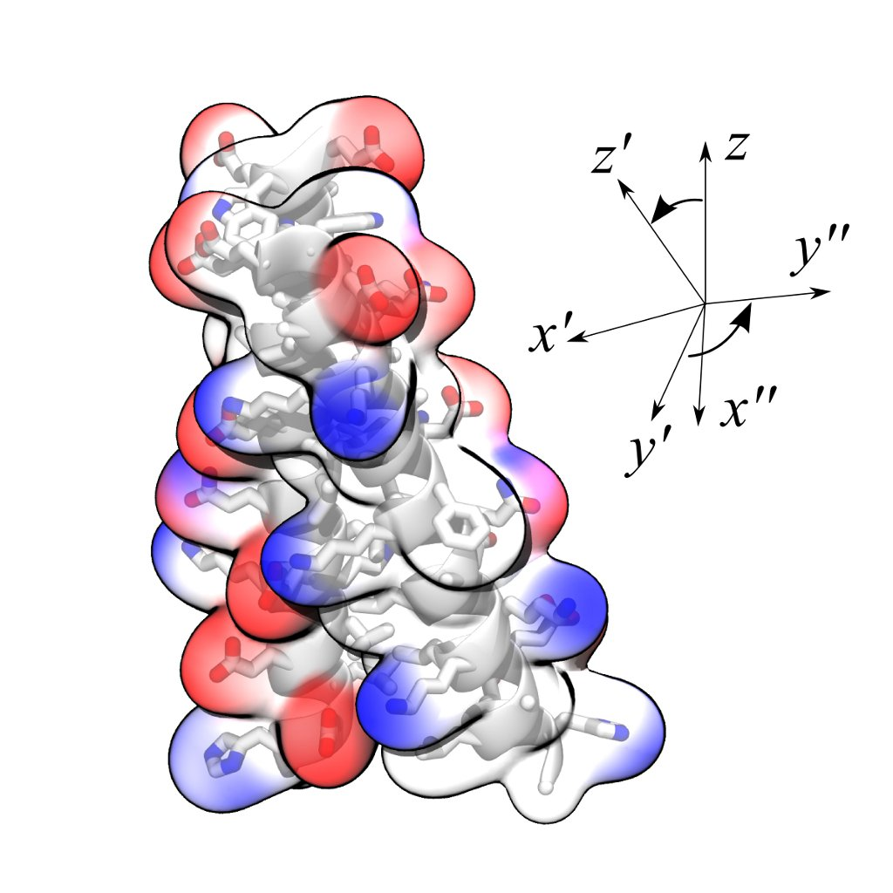
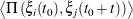
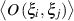
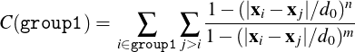
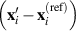
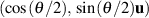
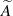
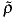
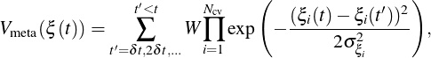
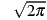

COLLECTIVE VARIABLES MODULE
Reference manual for NAMD
Code version: 2017-09-18
 Giacomo Fiorin, Jérôme Hénin
Contents
1 Introduction
In molecular dynamics simulations, it is often useful to reduce the large number of degrees of freedom of a physical
system into few parameters whose statistical distributions can be analyzed individually, or used to
define biasing potentials to alter the dynamics of the system in a controlled manner. These have been
called ‘order parameters’, ‘collective variables’, ‘(surrogate) reaction coordinates’, and many other
terms.
Here we use primarily the term ‘collective variable’ (shortened to colvar), which indicates any
differentiable function of atomic Cartesian coordinates, xi, with i between 1 and N, the total number of
atoms:
This manual documents the collective variables module (Colvars), a portable software that interfaces multiple MD
simulation programs, with a focus on flexibility, robustness and high performance. The module is designed
to perform multiple tasks concurrently during or after a simulation, the most common of which are:
- apply restraints or biasing potentials to multiple colvars, tailored on the system by choosing from a
wide set of basis functions, without limitations on their number or on the number of atoms involved;
while this can in principle be done through a TclForces script, using the Colvars module is both easier
and computationally more efficient;
- calculate potentials of mean force (PMFs) along any set of colvars, using different enhanced sampling
methods, such as Adaptive Biasing Force (ABF), metadynamics, steered MD and umbrella sampling;
variants of these methods that make use of an ensemble of replicas are supported as well;
- calculate statistical properties of the colvars, such as running averages and standard deviations,
correlation functions of pairs of colvars, and multidimensional histograms: this can be done either at
run-time without the need to save very large trajectory files, or after a simulation has been completed
using VMD and the cv command.
Detailed explanations of the design of the Colvars module are provided in reference [1]. Please cite this
reference whenever publishing work that makes use of this module.
2 A crash course
Suppose that we want to run a steered MD experiment where a small molecule is pulled away from a binding site. In
Colvars terms, this is done by applying a moving restraint to the distance between the two objects. The configuration
will contain two blocks, one defining the distance variable (see 4, 6), and the other the moving harmonic restraint
(7.4).
colvar {
name dist
distance {
group1 { atomNumbersRange 42-55 }
group2 {
psfSegID PR
atomNameResidueRange CA 15-30 }
}
}
}
harmonic {
colvars dist
forceConstant 20.0
centers 4. # initial distance
targetCenters 15. # final distance
targetNumSteps 500000
}
Reading this input in plain English: the variable here named dist consists in a distance function between the
centers of two groups: the ligand (atoms 42 to 55) and the alpha carbon atoms (CA) of residues 15 to 30 in the
protein (segment name PR). The atom selection syntax is detailed in 5.
To the “dist” variable, we apply a harmonic potential of force constant 20 kcal/mol/Å2, initially centered
around a value of 4 Å, which will increase to 15 Å over 500,000 simulation steps.
3 General parameters and input/output files
Here, we document the syntax of the commands and parameters used to set up and use the Colvars module in
NAMD. One of these parameters is the configuration file or the configuration text for the module itself, whose
syntax is described in 3.2 and in the following sections.
3.1 NAMD parameters
To enable a Colvars-based calculation, two parameters must be added to the NAMD configuration file, colvars
and colvarsConfig. An optional third parameter, colvarsInput, can be used to continue a previous
simulation.
- colvars ⟨Enable the Colvars module⟩
Context: NAMD configuration file
Acceptable values: boolean
Default value: off
Description: If this flag is on, the Colvars module within NAMD is enabled; the module requires a
separate configuration file, to be provided with colvarsConfig.
- colvarsConfig ⟨Configuration file for the collective variables⟩
Context: NAMD configuration file
Acceptable values: UNIX filename
Description: This file contains the definition of all collective variables and their biasing or analysis
methods. This file can also be provided by the Tcl command cv configfile; alternatively, the
contents of the file itself can be given as an argument to the command cv config.
- colvarsInput ⟨Input state file for the collective variables⟩
Context: NAMD configuration file
Acceptable values: UNIX filename
Description: When continuing a previous simulation run, this file contains the current state of all
collective variables and of their associated algorithms. It is written automatically at the end of any
simulation with collective variables. This file can also be provided by the Tcl command cv load.
3.2 Configuration syntax for the Colvars module
All the parameters defining the colvars and their biasing or analysis algorithms are read from the file specified by the
configuration option colvarsConfig, or by the Tcl commands cv config and cv configfile. Hence, none of the
keywords described in this section and the following ones are available as keywords for the NAMD configuration
file. The syntax of the Colvars configuration is “keyword value”, where the keyword and its value are separated by
any white space. The following rules apply:
- keywords are case-insensitive (upperBoundary is the same as upperboundary and UPPERBOUNDARY):
their string values are however case-sensitive (e.g. file names);
- a long value or a list of multiple values can be distributed across multiple lines by using curly braces,
“{” and “}”: the opening brace “{” must occur on the same line as the keyword, following a space
character or other white space; the closing brace “}” can be at any position after that;
- many keywords are nested, and are only meaningful within a specific context: for every keyword
documented in the following, the “parent” keyword that defines such context is also indicated;
- the ‘=’ sign between a keyword and its value, deprecated in the NAMD main configuration file, is not
allowed;
- Tcl syntax is generally not available, but it is possible to use Tcl variables or bracket expansion
of commands within a configuration string, when this is passed via the command cv config
…; this is particularly useful when combined with parameter introspection, e.g. cv config
"colvarsTrajFrequency [DCDFreq]";
- if a keyword requiring a boolean value (yes|on|true or no|off|false) is provided without an
explicit value, it defaults to ‘yes|on|true’; for example, ‘outputAppliedForce’ may be used as
shorthand for ‘outputAppliedForce on’;
- the hash character # indicates a comment: all text in the same line following this character will be
ignored.
The following keywords are available in the global context of the colvars configuration, i.e. they are not nested
inside other keywords:
- colvarsTrajFrequency ⟨Colvar value trajectory frequency⟩
Context: global
Acceptable values: positive integer
Default value: 100
Description: The values of each colvar (and of other related quantities, if requested) are written to
the file outputName.colvars.traj every these many steps throughout the simulation. If the value is
0, such trajectory file is not written. For optimization the output is buffered, and synchronized with
the disk only when the restart file is being written.
- colvarsTrajAppend ⟨Append to trajectory file?⟩
Context: global
Acceptable values: boolean
Default value: off
Description: If this flag is enabled, and a file with the same name as the trajectory file is already
present, new data is appended to that file. Otherwise, a new file is created with the same name that
overwrites the previous file. Note: when running consecutive simulations with the same outputName
(e.g. in FEP calculations), you should enable this option to preserve the previous contents of the
trajectory file.
- colvarsRestartFrequency ⟨Colvar module restart frequency⟩
Context: global
Acceptable values: positive integer
Default value: restartFreq
Description: Allows to choose a different restart frequency for the Colvars module. Redefining it
may be useful to trace the time evolution of those few properties which are not written to the trajectory
file for reasons of disk space.
- indexFile ⟨Index file for atom selection (GROMACS “ndx” format)⟩
Context: global
Acceptable values: UNIX filename
Description: This option reads an index file (usually with a .ndx extension) as produced by the
make_ndx tool of GROMACS. This keyword may be repeated to load multiple index files: the same
group name cannot appear in multiple index files. The names of index groups contained in this file
can then be used to define atom groups with the indexGroup keyword. Other supported methods to
select atoms are described in 5.
- smp ⟨Whether SMP parallelism should be used⟩
Context: global
Acceptable values: boolean
Default value: on
Description: If this flag is enabled (default), SMP parallelism over threads will be used to compute
variables and biases, provided that this is supported by NAMD.
- analysis ⟨Turn on run-time statistical analysis⟩
Context: global
Acceptable values: boolean
Default value: off
Description: If this flag is enabled, each colvar is instructed to perform whatever run-time statistical
analysis it is configured to, such as correlation functions, or running averages and standard deviations.
See section 4.4 for details.
To illustrate the flexibility of the Colvars module, a non-trivial setup is represented in Figure 1. The
corresponding configuration is given below. The options within the colvar blocks are described in 4 and 6, those
within the harmonic and histogram blocks in 7. Note: except colvar, none of the keywords shown is
mandatory.
colvar {
# difference of two distances
name d
width 0.2 # 0.2 Å of estimated fluctuation width
distance {
componentCoeff 1.0
group1 { atomNumbers 1 2 }
group2 { atomNumbers 3 4 5 }
}
distance {
componentCoeff -1.0
group1 { atomNumbers 7 }
group2 { atomNumbers 8 9 10 }
}
}
colvar {
name c
coordNum {
cutoff 6.0
group1 { atomNumbersRange 1-10 }
group2 { atomNumbersRange 11-20 }
}
}
colvar {
name alpha
alpha {
psfSegID PROT
residueRange 1-10
}
}
harmonic {
colvars d c
centers 3.0 4.0
forceConstant 5.0
}
histogram {
colvars c alpha
}
Section 4 explains how to define a colvar and its behavior, regardless of its specific functional form. To define
colvars that are appropriate to a specific physical system, Section 5 documents how to select atoms, and section 6
lists all of the available functional forms, which we call “colvar components”. Finally, section 7 lists the
available methods and algorithms to perform biased simulations and multidimensional analysis of
colvars.
3.3 Input state file (optional)
Aside from the colvars configuration, an optional input state file may be provided to load the relevant data from a
previous simulation. The name of this file is provided as a value to the keyword colvarsInput.
3.4 Output files
During a simulation with collective variables defined, the following three output files are written:
- a state file, named outputName.colvars.state; this file is in ASCII format , regardless of the value
of binaryOutput in the NAMD configuration; to continue the simulation, the name of this file must
be included in the configuration of the next run using colvarsInput, together with the other NAMD
output files;
- if the NAMD parameter restartFreq or the parameter colvarsRestartFrequency is larger than
zero, a restart file named restartName.colvars.state is written every that many steps: this file is
equivalent to the final state file;
- if the parameter colvarsTrajFrequency is greater than 0 (default: 100), a trajectory file is written
during the simulation: its name is outputName.colvars.traj; unlike the state file, it is not needed to
restart a simulation, but can be used later for post-processing and analysis.
Other output files may be written by specific methods applied to the colvars (e.g. by the ABF method, see 7.1,
or the metadynamics method, see 7.3). Like the colvar trajectory file, they are needed only for analyzing, not
continuing a simulation. All such files’ names also begin with the prefix outputName.
Finally, the total energy of all biases or restraints applied to the colvars appears under the NAMD standard
output, under the MISC column.
4 Defining collective variables and their properties
In the configuration file each colvar is defined by the keyword colvar, followed by its configuration options within
curly braces: colvar { ... }. One of these options is the name of a colvar component: for example, including
rmsd { ... } defines the colvar as a RMSD function. In most applications, only one component is used, and the
component is equal to the colvar.
The full list of colvar components can be found in Section 6, with the syntax to select atoms in Section 5.
The following section lists several options to control the behavior of a single colvar, regardless of its
type.
4.1 General options for a collective variable
The following options are not required by default; however, the first four are very frequently used:
- name ⟨Name of this colvar⟩
Context: colvar
Acceptable values: string
Default value: “colvar” + numeric id
Description: The name is an unique case-sensitive string which allows the Colvars module to identify
this colvar unambiguously; it is also used in the trajectory file to label to the columns corresponding
to this colvar.
- width ⟨Colvar fluctuation scale, or resolution for grid-based methods⟩
Context: colvar
Acceptable values: positive decimal
Default value: 1.0
Description: This number has the same physical unit as the colvar value and defines an effective
colvar unit. Biasing algorithms use it for different purposes. Harmonic restraints (7.4) use it to set
the physical unit of the force constant, which is useful for multidimensional restraints involving
colvars with different units or scale which may then be defined by a single, scaled force constant.
Histogram (7.8) and ABF biases (7.1) interpret it as the grid spacing in the direction of this variable.
Metadynamics (7.3) uses it to set the width of newly added hills. In other cases, it is simplest to keep
the default value of 1, so that harmonic force constants are provided in their usual physical unit. When
a non-unity width is required by the application, the optimal value is application-dependent, but can
often be thought of as a user-provided estimate of the fluctuation amplitude for the colvar. In those
cases, it should generally be set smaller than or equal to the standard deviation of the colvar during a
very short simulation run.
- lowerBoundary ⟨Lower boundary of the colvar⟩
Context: colvar
Acceptable values: decimal
Description: Defines the lowest end of the interval of “relevant” values for the colvar. This number
can be either a true physical boundary, or a user-defined number. Together with upperBoundary
and width, it is used to define a grid of values along the colvar (not available for colvars based on
distanceDir, distanceVec, and orientation). This option does not affect dynamics: to confine a
colvar within a certain interval, use a harmonicWalls bias.
- upperBoundary ⟨Upper boundary of the colvar⟩
Context: colvar
Acceptable values: decimal
Description: Similarly to lowerBoundary, defines the highest possible or allowed value.
- hardLowerBoundary ⟨Whether the lower boundary is the physical lower limit⟩
Context: colvar
Acceptable values: boolean
Default value: off
Description: This option does not affect simulation results, but enables some internal optimizations.
Depending on its mathematical definition, a colvar may have “natural” boundaries: for example, a
distance colvar has a “natural” lower boundary at 0. Setting this option instructs the Colvars module
that the user-defined lower boundary is “natural”. See Section 6 for the physical ranges of values of
each component.
- hardUpperBoundary ⟨Whether the upper boundary is the physical upper limit of the colvar’s
values⟩
Context: colvar
Acceptable values: boolean
Default value: off
Description: Analogous to hardLowerBoundary.
- expandBoundaries ⟨Allow to expand the two boundaries if needed⟩
Context: colvar
Acceptable values: boolean
Default value: off
Description: If defined, biasing and analysis methods may keep their own copies of lowerBoundary
and upperBoundary, and expand them to accommodate values that do not fit in the initial range.
Currently, this option is used by the metadynamics bias (7.3) to keep all of its hills fully within the
grid. This option cannot be used when the initial boundaries already span the full period of a periodic
colvar.
- subtractAppliedForce ⟨Do not include biasing forces in the total force for this colvar⟩
Context: colvar
Acceptable values: boolean
Default value: off
Description: If the colvar supports total force calculation (see 6.3.3), all forces applied to this
colvar by biases will be removed from the total force. This keyword allows to recover some of the
“system force” calculation available in the Colvars module before version 2016-08-10. Please note
that removal of all other external forces (including biasing forces applied to a different colvar) is
no longer supported, due to changes in the underlying simulation engines (primarily NAMD). This
option may be useful when continuing a previous simulation where the removal of external/applied
forces is essential. For all new simulations, the use of this option is not recommended.
4.2 Trajectory output
- outputValue ⟨Output a trajectory for this colvar⟩
Context: colvar
Acceptable values: boolean
Default value: on
Description: If colvarsTrajFrequency is non-zero, the value of this colvar is written to the
trajectory file every colvarsTrajFrequency steps in the column labeled “<name>”.
- outputVelocity ⟨Output a velocity trajectory for this colvar⟩
Context: colvar
Acceptable values: boolean
Default value: off
Description: If colvarsTrajFrequency is defined, the finite-difference calculated velocity of this
colvar are written to the trajectory file under the label “v_<name>”.
- outputEnergy ⟨Output an energy trajectory for this colvar⟩
Context: colvar
Acceptable values: boolean
Default value: off
Description: This option applies only to extended Lagrangian colvars. If colvarsTrajFrequency
is defined, the kinetic energy of the extended degree and freedom and the potential energy of
the restraining spring are are written to the trajectory file under the labels “Ek_<name>” and
“Ep_<name>”.
- outputTotalForce ⟨Output a total force trajectory for this colvar⟩
Context: colvar
Acceptable values: boolean
Default value: off
Description: If colvarsTrajFrequency is defined, the total force on this colvar (i.e. the projection
of all atomic total forces onto this colvar — see equation (19) in section 7.1) are written to the
trajectory file under the label “fs_<name>”. For extended Lagrangian colvars, the “total force”
felt by the extended degree of freedom is simply the force from the harmonic spring. Note: not all
components support this option. The physical unit for this force is kcal/mol, divided by the colvar unit
U.
- outputAppliedForce ⟨Output an applied force trajectory for this colvar⟩
Context: colvar
Acceptable values: boolean
Default value: off
Description: If colvarsTrajFrequency is defined, the total force applied on this colvar by Colvars
biases are written to the trajectory under the label “fa_<name>”. For extended Lagrangian colvars,
this force is actually applied to the extended degree of freedom rather than the geometric colvar itself.
The physical unit for this force is kcal/mol divided by the colvar unit.
4.3 Extended Lagrangian.
The following options enable extended-system dynamics, where a colvar is coupled to an additional degree of
freedom (fictitious particle) by a harmonic spring. All biasing and confining forces are then applied to the extended
degree of freedom. The “actual” geometric colvar (function of Cartesian coordinates) only feels the force from the
harmonic spring. This is particularly useful when combined with an ABF bias (7.1) to perform eABF simulations
(7.2).
- extendedLagrangian ⟨Add extended degree of freedom⟩
Context: colvar
Acceptable values: boolean
Default value: off
Description: Adds a fictitious particle to be coupled to the colvar by a harmonic spring. The
fictitious mass and the force constant of the coupling potential are derived from the parameters
extendedTimeConstant and extendedFluctuation, described below. Biasing forces on the colvar
are applied to this fictitious particle, rather than to the atoms directly. This implements the extended
Lagrangian formalism used in some metadynamics simulations [2]. The energy associated with the
extended degree of freedom is reported under the MISC title in NAMD’s energy output.
- extendedFluctuation ⟨Standard deviation between the colvar and the fictitious particle (colvar
unit)⟩
Context: colvar
Acceptable values: positive decimal
Description: Defines the spring stiffness for the extendedLagrangian mode, by setting the
typical deviation between the colvar and the extended degree of freedom due to thermal
fluctuation. The spring force constant is calculated internally as kBT ∕σ2, where σ is the value of
extendedFluctuation.
- extendedTimeConstant ⟨Oscillation period of the fictitious particle (fs)⟩
Context: colvar
Acceptable values: positive decimal
Default value: 200
Description: Defines the inertial mass of the fictitious particle, by setting the oscillation period of the
harmonic oscillator formed by the fictitious particle and the spring. The period should be much larger
than the MD time step to ensure accurate integration of the extended particle’s equation of motion.
The fictitious mass is calculated internally as kBT (τ∕2πσ)2, where τ is the period and σ is the typical
fluctuation (see above).
- extendedTemp ⟨Temperature for the extended degree of freedom (K)⟩
Context: colvar
Acceptable values: positive decimal
Default value: thermostat temperature
Description: Temperature used for calculating the coupling force constant of the extended variable
(see extendedFluctuation) and, if needed, as a target temperature for extended Langevin dynamics
(see extendedLangevinDamping). This should normally be left at its default value.
- extendedLangevinDamping ⟨Damping factor for extended Langevin dynamics (ps−1)⟩
Context: colvar
Acceptable values: positive decimal
Default value: 1.0
Description: If this is non-zero, the extended degree of freedom undergoes Langevin dynamics
at temperature extendedTemp. The friction force is minus extendedLangevinDamping times the
velocity. This is useful because the extended dynamics coordinate may heat up in the transient
non-equilibrium regime of ABF. Use moderate damping values, to limit viscous friction (potentially
slowing down diffusive sampling) and stochastic noise (increasing the variance of statistical
measurements). In doubt, use the default value.
4.4 Statistical analysis of collective variables
When the global keyword analysis is defined in the configuration file, run-time calculations of statistical properties
for individual colvars can be performed. At the moment, several types of time correlation functions, running
averages and running standard deviations are available.
- corrFunc ⟨Calculate a time correlation function?⟩
Context: colvar
Acceptable values: boolean
Default value: off
Description: Whether or not a time correlaction function should be calculated for this colvar.
- corrFuncWithColvar ⟨Colvar name for the correlation function⟩
Context: colvar
Acceptable values: string
Description: By default, the auto-correlation function (ACF) of this colvar, ξi, is calculated. When
this option is specified, the correlation function is calculated instead with another colvar, ξj, which
must be of the same type (scalar, vector, or quaternion) as ξi.
- corrFuncType ⟨Type of the correlation function⟩
Context: colvar
Acceptable values: velocity, coordinate or coordinate_p2
Default value: velocity
Description: With coordinate or velocity, the correlation function Ci,j(t) =
 is calculated between the variables ξi and ξj, or their velocities. Π(ξi,ξj) is
the scalar product when calculated between scalar or vector values, whereas for quaternions it is the
cosine between the two corresponding rotation axes. With coordinate_p2, the second order Legendre
polynomial, (3cos(𝜃)2 −1)∕2, is used instead of the cosine.
- corrFuncNormalize ⟨Normalize the time correlation function?⟩
Context: colvar
Acceptable values: boolean
Default value: on
Description: If enabled, the value of the correlation function at t = 0 is normalized to 1; otherwise,
it equals to .
- corrFuncLength ⟨Length of the time correlation function⟩
Context: colvar
Acceptable values: positive integer
Default value: 1000
Description: Length (in number of points) of the time correlation function.
- corrFuncStride ⟨Stride of the time correlation function⟩
Context: colvar
Acceptable values: positive integer
Default value: 1
Description: Number of steps between two values of the time correlation function.
- corrFuncOffset ⟨Offset of the time correlation function⟩
Context: colvar
Acceptable values: positive integer
Default value: 0
Description: The starting time (in number of steps) of the time correlation function (default: t = 0).
Note: the value at t = 0 is always used for the normalization.
- corrFuncOutputFile ⟨Output file for the time correlation function⟩
Context: colvar
Acceptable values: UNIX filename
Default value: <name>.corrfunc.dat
Description: The time correlation function is saved in this file.
- runAve ⟨Calculate the running average and standard deviation⟩
Context: colvar
Acceptable values: boolean
Default value: off
Description: Whether or not the running average and standard deviation should be calculated for this
colvar.
- runAveLength ⟨Length of the running average window⟩
Context: colvar
Acceptable values: positive integer
Default value: 1000
Description: Length (in number of points) of the running average window.
- runAveStride ⟨Stride of the running average window values⟩
Context: colvar
Acceptable values: positive integer
Default value: 1
Description: Number of steps between two values within the running average window.
- runAveOutputFile ⟨Output file for the running average and standard deviation⟩
Context: colvar
Acceptable values: UNIX filename
Default value: <name>.runave.dat
Description: The running average and standard deviation are saved in this file.
5 Selecting atoms for colvars: defining atom groups
To define collective variables, atoms are usually selected as groups. Each group is defined using an identifier that is
unique in the context of the specific colvar component (e.g. for a distance component, the two groups are group1
and group2). The identifier is followed by a brace-delimited block containing selection keywords and other
parameters, including an optional name:
- name ⟨Unique name for the atom group⟩
Context: atom group
Acceptable values: string
Description: This parameter defines a unique name for this atom group, which can be referred to
in the definition of other atom groups (including in other colvars) by invoking atomsOfGroup as a
selection keyword.
5.1 Selection keywords
Selection keywords may be used individually or in combination with each other, and each can be repeated any
number of times. Selection is incremental: each keyword adds the corresponding atoms to the selection, so that
different sets of atoms can be combined. However, atoms included by multiple keywords are only counted once.
Below is an example configuration for an atom group with identifier “atoms”, which uses an unusually varied
combination of selection keywords:
atoms {
# add atoms 1 and 3 to this group (note: the first atom in the system is 1)
atomNumbers {
1 3
}
# add atoms starting from 20 up to and including 50
atomNumbersRange 20-50
# add index group (requires a .ndx file to be provided globally)
indexGroup Water
# add all the atoms with occupancy 2 in the file atoms.pdb
atomsFile atoms.pdb
atomsCol O
atomsColValue 2.0
# add all the C-alphas within residues 11 to 20 of segments "PR1" and "PR2"
psfSegID PR1 PR2
atomNameResidueRange CA 11-20
atomNameResidueRange CA 11-20
}
The resulting selection includes atoms 1 and 3, those between 20 and 50, and those in the index group called
“Water”; the indices of this group are read from the file provided by indexFile, in the global section of the
configuration file.
The complete list of selection keywords available in NAMD is:
- atomNumbers ⟨List of atom numbers⟩
Context: atom group
Acceptable values: space-separated list of positive integers
Description: This option adds to the group all the atoms whose numbers are in the list. The number
of the first atom in the system is 1: to convert from a VMD selection, use “atomselect get serial”.
- indexGroup ⟨Name of index group to be used (GROMACS format)⟩
Context: atom group
Acceptable values: string
Description: If the name of an index file has been provided by indexFile, this option allows to
select one index group from that file: the atoms from that index group will be used to define the current
group.
- atomsOfGroup ⟨Name of group defined previously⟩
Context: atom group
Acceptable values: string
Description: Refers to a group defined previously using its user-defined name. This adds all atoms of
that named group to the current group.
- atomNumbersRange ⟨Atoms within a number range⟩
Context: atom group
Acceptable values: <Starting number>-<Ending number>
Description: This option includes in the group all atoms whose numbers are within the range
specified. The number of the first atom in the system is 1.
- atomNameResidueRange ⟨Named atoms within a range of residue numbers⟩
Context: atom group
Acceptable values: <Atom name> <Starting residue>-<Ending residue>
Description: This option adds to the group all the atoms with the provided name, within residues in
the given range.
- psfSegID ⟨PSF segment identifier⟩
Context: atom group
Acceptable values: space-separated list of strings (max 4 characters)
Description: This option sets the PSF segment identifier for atomNameResidueRange. Multiple
values may be provided, which correspond to multiple instances of atomNameResidueRange, in the
order of their occurrence. This option is only necessary if a PSF topology file is used.
- atomsFile ⟨PDB file name for atom selection⟩
Context: atom group
Acceptable values: UNIX filename
Description: This option selects atoms from the PDB file provided and adds them to the group
according to numerical flags in the column atomsCol. Note: the sequence of atoms in the PDB file
provided must match that in the system’s topology.
- atomsCol ⟨PDB column to use for atom selection flags⟩
Context: atom group
Acceptable values: O, B, X, Y, or Z
Description: This option specifies which PDB column in atomsFile is used to determine which
atoms are to be included in the group.
- atomsColValue ⟨Atom selection flag in the PDB column⟩
Context: atom group
Acceptable values: positive decimal
Description: If defined, this value in atomsCol identifies atoms in atomsFile that are included in
the group. If undefined, all atoms with a non-zero value in atomsCol are included.
- dummyAtom ⟨Dummy atom position (Å)⟩
Context: atom group
Acceptable values: (x, y, z) triplet
Description: Instead of selecting any atom, this option makes the group a virtual particle at a fixed
position in space. This is useful e.g. to replace a group’s center of geometry with a user-defined
position.
5.2 Moving frame of reference.
The following options define an automatic calculation of an optimal translation (centerReference) or optimal
rotation (rotateReference), that superimposes the positions of this group to a provided set of reference
coordinates. This can allow, for example, to effectively remove from certain colvars the effects of
molecular tumbling and of diffusion. Given the set of atomic positions xi, the colvar ξ can be defined
on a set of roto-translated positions xi′ = R(xi − xC)+ xref. xC is the geometric center of the xi, R is
the optimal rotation matrix to the reference positions and xref is the geometric center of the reference
positions.
Components that are defined based on pairwise distances are naturally invariant under global roto-translations.
Other components are instead affected by global rotations or translations: however, they can be made invariant if
they are expressed in the frame of reference of a chosen group of atoms, using the centerReference and
rotateReference options. Finally, a few components are defined by convention using a roto-translated frame (e.g.
the minimal RMSD): for these components, centerReference and rotateReference are enabled by default. In
typical applications, the default settings result in the expected behavior.
- centerReference ⟨Implicitly remove translations for this group⟩
Context: atom group
Acceptable values: boolean
Default value: off
Description: If this option is on, the center of geometry of the group will be aligned with that of the
reference positions provided by either refPositions or refPositionsFile. Colvar components will
only have access to the aligned positions. Note: unless otherwise specified, rmsd and eigenvector
set this option to on by default.
- rotateReference ⟨Implicitly remove rotations for this group⟩
Context: atom group
Acceptable values: boolean
Default value: off
Description: If this option is on, the coordinates of this group will be optimally superimposed to
the reference positions provided by either refPositions or refPositionsFile. The rotation will
be performed around the center of geometry if centerReference is on, around the origin otherwise.
The algorithm used is the same employed by the orientation colvar component [3]. Forces applied
to the atoms of this group will also be implicitly rotated back to the original frame. Note: unless
otherwise specified, rmsd and eigenvector set this option to on by default.
- refPositions ⟨Reference positions for fitting (Å)⟩
Context: atom group
Acceptable values: space-separated list of (x, y, z) triplets
Description: This option provides a list of reference coordinates for centerReference or
rotateReference. If only centerReference is on, the list may contain a single (x, y, z) triplet; if
also rotateReference is on, the list should be as long as the atom group.
- refPositionsFile ⟨File containing the reference positions for fitting⟩
Context: atom group
Acceptable values: UNIX filename
Description: This keyword provides the reference coordinates for fitting from the given file, and is
mutually exclusive with refPositions. The acceptable file format is XYZor PDB. Atomic positions
are read differently depending on the three following scenarios: i) the file contains exactly as many
records as the atoms in the group: all positions are read in sequence; ii) the file contains coordinates
for the entire system: only the positions corresponding to the numeric indices of the atom group are
read; iii) if the file is a PDB file and refPositionsCol is specified, positions are read according to
the value of the column refPositionsCol (which may be the same as atomsCol).
- refPositionsCol ⟨PDB column containing atom flags⟩
Context: atom group
Acceptable values: O, B, X, Y, or Z
Description: Like atomsCol for atomsFile, indicates which column to use to identify the atoms in
refPositionsFile (if this is a PDB file).
- refPositionsColValue ⟨Atom selection flag in the PDB column⟩
Context: atom group
Acceptable values: positive decimal
Description: Analogous to atomsColValue, but applied to refPositionsCol.
- fittingGroup ⟨Use an alternate set of atoms to define the roto-translation⟩
Context: atom group
Acceptable values: Block fittingGroup { ... }
Default value: This group itself
Description: If either centerReference or rotateReference is defined, this keyword defines an
alternate atom group to calculate the optimal roto-translation. Use this option to define a continuous
rotation if the structure of the group involved changes significantly (a typical symptom would be the
message “Warning: discontinuous rotation!”).
The following example illustrates the syntax of fittingGroup: a group called “atoms” is defined,
including 8 Cα atoms of a protein of 100 residues. An optimal roto-translation is calculated
automatically by fitting the Cα trace of the rest of the protein onto the coordinates provided by a PDB
file.
# Example: defining a group "atoms", with its coordinates expressed
# on a roto-translated frame of reference defined by a second group
atoms {
psfSegID PROT
atomNameResidueRange CA 41-48
centerReference yes
rotateReference yes
fittingGroup {
# define the frame by fitting the rest of the protein
psfSegID PROT PROT
atomNameResidueRange CA 1-40
atomNameResidueRange CA 49-100
}
refPositionsFile all.pdb # can be the entire system
}
The following two options have default values appropriate for the vast majority of applications, and are only
provided to support rare, special cases.
- enableFitGradients ⟨Include the roto-translational contribution to colvar gradients⟩
Context: atom group
Acceptable values: boolean
Default value: on
Description: When either centerReference or rotateReference is on, the gradients of some
colvars include terms proportional to ∂R∕∂xi (rotational gradients) and ∂xC∕∂xi (translational
gradients). By default, these terms are calculated and included in the total gradients; if this option is
set to off, they are neglected. In the case of a minimum RMSD component, this flag is automatically
disabled because the contributions of those derivatives to the gradients cancel out.
- enableForces ⟨Apply forces from this colvar to this group⟩
Context: atom group
Acceptable values: boolean
Default value: on
Description: If this option is off, no forces are applied from this colvar to this group. Other forces
are not affected (i.e. those from the MD engine, from other colvars, and other external forces). For
dummy atoms, this option is off by default.
5.3 Treatment of periodic boundary conditions.
In simulations with periodic boundary conditions, NAMD maintains the coordinates of all the atoms within a
molecule contiguous to each other (i.e. there are no spurious “jumps” in the molecular bonds). The Colvars module
relies on this when calculating a group’s center of geometry, but the condition may fail if the group spans different
molecules: in that case, writing the NAMD output files wrapAll or wrapWater could produce wrong results when a
simulation run is continued from a previous one. The user should then determine, according to which type of colvars
are being calculated, whether wrapAll or wrapWater can be enabled. In general, internal coordinate wrapping
by NAMD does not affect the calculation of colvars if each atom group satisfies one or more of the
following:
- it is composed by only one atom;
- it is used by a colvar component which does not make use of its center of geometry, but only of
pairwise distances (distanceInv, coordNum, hBond, alpha, dihedralPC);
- it is used by a colvar component that ignores the ill-defined Cartesian components of its center of
mass (such as the x and y components of a membrane’s center of mass modeled with distanceZ);
- it has all of its atoms within the same molecular fragment.
5.4 Performance a Colvars calculation based on group size.
In simulations performed with message-passing programs (such as NAMD or LAMMPS), the calculation of energy
and forces is distributed (i.e., parallelized) across multiple nodes, as well as over the processor cores of each node.
Atomic coordinates are typically collected on one node, where the calculation of collective variables and of their
biases is executed. This means that for simulations over large numbers of nodes, a Colvars calculation may produce
a significant overhead, coming from the costs of transmitting atomic coordinates to one node and of processing
them. The latency-tolerant design and dynamic load balancing of NAMD may alleviate both factors, but a noticeable
performance impact may be observed.
Performance can be improved in multiple ways:
- The calculation of variables, components and biases can be distributed over the processor cores of the
node where the Colvars module is executed. Currently, an equal weight is assigned to each colvar,
or to each component of those colvars that include more than one component. The performance of
simulations that use many colvars or components is improved automatically. For simulations that use
a single large colvar, it may be advisable to partition it in multiple components, which will be then
distributed across the available cores. In NAMD, this feature is enabled in all binaries compiled using
SMP builds of Charm++ with the CkLoop extension. If printed, the message “SMP parallelism is
available.” indicates the availability of the option.
- NAMD also offers a parallelized calculation of the centers of mass of groups of atoms. This option is
on by default for all components that are simple functions of centers of mass, and is controlled by the
keyword scalable. When supported, the message “Will enable scalable calculation for group …” is
printed for each group.
- As a general rule, the size of atom groups should be kept relatively small (up to a few thousands
of atoms, depending on the size of the entire system in comparison). To gain an estimate of the
computational cost of a large colvar, one can use a test calculation of the same colvar in VMD (hint:
use the time Tcl command to measure the cost of running cv update).
6 Collective variable components (basis functions)
Each colvar is defined by one or more components (typically only one). Each component consists of a keyword
identifying a functional form, and a definition block following that keyword, specifying the atoms involved and any
additional parameters (cutoffs, “reference” values, …).
The types of the components used in a colvar determine the properties of that colvar, and which biasing or
analysis methods can be applied. In most cases, the colvar returns a real number, which is computed by one or more
instances of the following components:
- distance: distance between two groups;
- distanceZ: projection of a distance vector on an axis;
- distanceXY: projection of a distance vector on a plane;
- distanceInv: mean distance between two groups of atoms (e.g. NOE-based distance);
- angle: angle between three groups;
- dihedral: torsional (dihedral) angle between four groups;
- dipoleAngle: angle between two groups and dipole of a third group;
- polarTheta: polar angle of a group in spherical coordinates;
- polarPhi: azimuthal angle of a group in spherical coordinates;
- coordNum: coordination number between two groups;
- selfCoordNum: coordination number of atoms within a group;
- hBond: hydrogen bond between two atoms;
- rmsd: root mean square deviation (RMSD) from a set of reference coordinates;
- eigenvector: projection of the atomic coordinates on a vector;
- orientationAngle: angle of the best-fit rotation from a set of reference coordinates;
- orientationProj: cosine of orientationProj;
- spinAngle: projection orthogonal to an axis of the best-fit rotation from a set of reference coordinates;
- tilt: projection on an axis of the best-fit rotation from a set of reference coordinates;
- gyration: radius of gyration of a group of atoms;
- inertia: moment of inertia of a group of atoms;
- inertiaZ: moment of inertia of a group of atoms around a chosen axis;
- alpha: α-helix content of a protein segment.
- dihedralPC: projection of protein backbone dihedrals onto a dihedral principal component.
Some components do not return scalar, but vector values. They can only be combined with vector values of the
same type, except within a scripted collective variable.
- distanceVec: distance vector between two groups;
- distanceDir: unit vector parallel to distanceVec;
- cartesian: vector of atomic Cartesian coordinates;
- orientation: best-fit rotation, expressed as a unit quaternion.
In the following, all the available component types are listed, along with their physical units and the limiting
values, if any. Such limiting values can be used to define lowerBoundary and upperBoundary in the parent
colvar.
For each type of component, the available configurations keywords are listed: when two components share
certain keywords, the second component simply references to the documentation of the first regarding
that keyword. The keywords that are available for all types of components are listed at the end (see
6.1 List of available colvar components
6.1.1 distance: center-of-mass distance between two groups.
The distance {...} block defines a distance component between the two atom groups, group1 and
group2.
List of keywords (see also 6.4 for additional options):
- group1 ⟨First group of atoms⟩
Context: distance
Acceptable values: Block group1 {...}
Description: First group of atoms.
- group2: analogous to group1
- forceNoPBC ⟨Calculate absolute rather than minimum-image distance?⟩
Context: distance
Acceptable values: boolean
Default value: no
Description: By default, in calculations with periodic boundary conditions, the distance component
returns the distance according to the minimum-image convention. If this parameter is set to yes, PBC
will be ignored and the distance between the coordinates as maintained internally will be used. This is
only useful in a limited number of special cases, e.g. to describe the distance between remote points
of a single macromolecule, which cannot be split across periodic cell boundaries, and for which the
minimum-image distance might give the wrong result because of a relatively small periodic cell.
- oneSiteTotalForce ⟨Measure total force on group 1 only?⟩
Context: angle, dipoleAngle, dihedral
Acceptable values: boolean
Default value: no
Description: If this is set to yes, the total force is measured along a vector field (see equation (19) in
section 7.1) that only involves atoms of group1. This option is only useful for ABF, or custom biases
that compute total forces. See section 7.1 for details.
The value returned is a positive number (in Å), ranging from 0 to the largest possible interatomic distance within
the chosen boundary conditions (with PBCs, the minimum image convention is used unless the forceNoPBC option
is set).
6.1.2 distanceZ: projection of a distance vector on an axis.
The distanceZ {...} block defines a distance projection component, which can be seen as measuring the distance
between two groups projected onto an axis, or the position of a group along such an axis. The axis can be
defined using either one reference group and a constant vector, or dynamically based on two reference
groups.
List of keywords (see also 6.4 for additional options):
- main ⟨Main group of atoms⟩
Context: distanceZ
Acceptable values: Block main {...}
Description: Group of atoms whose position r is measured.
- ref ⟨Reference group of atoms⟩
Context: distanceZ
Acceptable values: Block ref {...}
Description: Reference group of atoms. The position of its center of mass is noted r1 below.
- ref2 ⟨Secondary reference group⟩
Context: distanceZ
Acceptable values: Block ref2 {...}
Default value: none
Description: Optional group of reference atoms, whose position r2 can be used to define a dynamic
projection axis: e = (∥r2 −r1∥)−1 ×(r2 −r1). In this case, the origin is rm = 1∕2(r1 +r2), and the
value of the component is e⋅(r−rm).
- axis ⟨Projection axis (Å)⟩
Context: distanceZ
Acceptable values: (x, y, z) triplet
Default value: (0.0, 0.0, 1.0)
Description: The three components of this vector define a projection axis e for the distance vector
r−r1 joining the centers of groups ref and main. The value of the component is then e⋅(r−r1). The
vector should be written as three components separated by commas and enclosed in parentheses.
- forceNoPBC: see definition of forceNoPBC in sec. 6.1.1 (distance component)
- oneSiteTotalForce: see definition of oneSiteTotalForce in sec. 6.1.1 (distance component)
This component returns a number (in Å) whose range is determined by the chosen boundary conditions.
For instance, if the z axis is used in a simulation with periodic boundaries, the returned value ranges
between −bz∕2 and bz∕2, where bz is the box length along z (this behavior is disabled if forceNoPBC is
set).
6.1.3 distanceXY: modulus of the projection of a distance vector on a plane.
The distanceXY {...} block defines a distance projected on a plane, and accepts the same keywords as the
component distanceZ, i.e. main, ref, either ref2 or axis, and oneSiteTotalForce. It returns the norm
of the projection of the distance vector between main and ref onto the plane orthogonal to the axis.
The axis is defined using the axis parameter or as the vector joining ref and ref2 (see distanceZ
above).
List of keywords (see also 6.4 for additional options):
- main: see definition of main in sec. 6.1.2 (distanceZ component)
- ref: see definition of ref in sec. 6.1.2 (distanceZ component)
- ref2: see definition of ref2 in sec. 6.1.2 (distanceZ component)
- axis: see definition of axis in sec. 6.1.2 (distanceZ component)
- forceNoPBC: see definition of forceNoPBC in sec. 6.1.1 (distance component)
- oneSiteTotalForce: see definition of oneSiteTotalForce in sec. 6.1.1 (distance component)
6.1.4 distanceVec: distance vector between two groups.
The distanceVec {...} block defines a distance vector component, which accepts the same keywords as the
component distance: group1, group2, and forceNoPBC. Its value is the 3-vector joining the centers of mass of
group1 and group2.
List of keywords (see also 6.4 for additional options):
- group1: see definition of group1 in sec. 6.1.1 (distance component)
- group2: analogous to group1
- forceNoPBC: see definition of forceNoPBC in sec. 6.1.1 (distance component)
- oneSiteTotalForce: see definition of oneSiteTotalForce in sec. 6.1.1 (distance component)
6.1.5 distanceDir: distance unit vector between two groups.
The distanceDir {...} block defines a distance unit vector component, which accepts the same keywords as the
component distance: group1, group2, and forceNoPBC. It returns a 3-dimensional unit vector d = (dx,dy,dz),
with |d| = 1.
List of keywords (see also 6.4 for additional options):
- group1: see definition of group1 in sec. 6.1.1 (distance component)
- group2: analogous to group1
- forceNoPBC: see definition of forceNoPBC in sec. 6.1.1 (distance component)
- oneSiteTotalForce: see definition of oneSiteTotalForce in sec. 6.1.1 (distance component)
6.1.6 distanceInv: mean distance between two groups of atoms.
The distanceInv {...} block defines a generalized mean distance between two groups of atoms 1 and 2, weighted
with exponent 1∕n:
where ∥dij∥ is the distance between atoms i and j in groups 1 and 2 respectively, and n is an even
integer.
List of keywords (see also 6.4 for additional options):
- group1: see definition of group1 in sec. 6.1.1 (distance component)
- group2: analogous to group1
- oneSiteTotalForce: see definition of oneSiteTotalForce in sec. 6.1.1 (distance component)
- exponent ⟨Exponent n in equation 2⟩
Context: distanceInv
Acceptable values: positive even integer
Default value: 6
Description: Defines the exponent to which the individual distances are elevated before averaging.
The default value of 6 is useful for example to applying restraints based on NOE-measured distances.
This component returns a number in Å, ranging from 0 to the largest possible distance within the chosen boundary
conditions.
6.1.7 distancePairs: set of pairwise distances between two groups.
The distancePairs {...} block defines a N1 ×N2-dimensional variable that includes all mutual distances
between the atoms of two groups. This can be useful, for example, to develop a new variable defined over two
groups, by using the scriptedFunction feature.
List of keywords (see also 6.4 for additional options):
- group1: see definition of group1 in sec. 6.1.1 (distance component)
- group2: analogous to group1
- forceNoPBC: see definition of forceNoPBC in sec. 6.1.1 (distance component)
This component returns a N1 ×N2-dimensional vector of numbers, each ranging from 0 to the largest possible distance
within the chosen boundary conditions.
6.1.8 cartesian: vector of atomic Cartesian coordinates.
The cartesian {...} block defines a component returning a flat vector containing the Cartesian coordinates of all
participating atoms, in the order (x1,y1,z1,,xn,yn,zn).
List of keywords (see also 6.4 for additional options):
- atoms ⟨Group of atoms⟩
Context: cartesian
Acceptable values: Block atoms {...}
Description: Defines the atoms whose coordinates make up the value of the component. If
rotateReference or centerReference are defined, coordinates are evaluated within the moving
frame of reference.
6.1.9 angle: angle between three groups.
The angle {...} block defines an angle, and contains the three blocks group1, group2 and group3, defining the
three groups. It returns an angle (in degrees) within the interval [0 : 180].
List of keywords (see also 6.4 for additional options):
- group1: see definition of group1 in sec. 6.1.1 (distance component)
- group2: analogous to group1
- group3: analogous to group1
- forceNoPBC: see definition of forceNoPBC in sec. 6.1.1 (distance component)
- oneSiteTotalForce: see definition of oneSiteTotalForce in sec. 6.1.1 (distance component)
6.1.10 dipoleAngle: angle between two groups and dipole of a third group.
The dipoleAngle {...} block defines an angle, and contains the three blocks group1, group2 and group3,
defining the three groups, being group1 the group where dipole is calculated. It returns an angle (in degrees) within
the interval [0 : 180].
List of keywords (see also 6.4 for additional options):
- group1: see definition of group1 in sec. 6.1.1 (distance component)
- group2: analogous to group1
- group3: analogous to group1
- forceNoPBC: see definition of forceNoPBC in sec. 6.1.1 (distance component)
- oneSiteTotalForce: see definition of oneSiteTotalForce in sec. 6.1.1 (distance component)
6.1.11 dihedral: torsional angle between four groups.
The dihedral {...} block defines a torsional angle, and contains the blocks group1, group2, group3 and
group4, defining the four groups. It returns an angle (in degrees) within the interval [−180 : 180]. The
Colvars module calculates all the distances between two angles taking into account periodicity. For
instance, reference values for restraints or range boundaries can be defined by using any real number of
choice.
List of keywords (see also 6.4 for additional options):
- group1: see definition of group1 in sec. 6.1.1 (distance component)
- group2: analogous to group1
- group3: analogous to group1
- group4: analogous to group1
- forceNoPBC: see definition of forceNoPBC in sec. 6.1.1 (distance component)
- oneSiteTotalForce: see definition of oneSiteTotalForce in sec. 6.1.1 (distance component)
6.1.12 polarTheta: polar angle in spherical coordinates.
The polarTheta {...} block defines the polar angle in spherical coordinates, for the center of mass of a group of
atoms described by the block atoms. It returns an angle (in degrees) within the interval [0 : 180]. To obtain spherical
coordinates in a frame of reference tied to another group of atoms, use the fittingGroup5.2 option within the
atoms block.
List of keywords (see also 6.4 for additional options):
- atoms ⟨Atom group⟩
Context: polarPhi
Acceptable values: atoms {...} block
Description: Defines the group of atoms for the COM of which the angle should be calculated.
6.1.13 polarPhi: azimuthal angle in spherical coordinates.
The polarPhi {...} block defines the azimuthal angle in spherical coordinates, for the center of mass of a group
of atoms described by the block atoms. It returns an angle (in degrees) within the interval [−180 : 180]. The
Colvars module calculates all the distances between two angles taking into account periodicity. For
instance, reference values for restraints or range boundaries can be defined by using any real number of
choice.
List of keywords (see also 6.4 for additional options):
- atoms ⟨Atom group⟩
Context: polarPhi
Acceptable values: atoms {...} block
Description: Defines the group of atoms for the COM of which the angle should be calculated.
6.1.14 coordNum: coordination number between two groups.
The coordNum {...} block defines a coordination number (or number of contacts), which calculates the function
(1−(d∕d0)n)∕(1−(d∕d0)m), where d0 is the “cutoff” distance, and n and m are exponents that can control its
long range behavior and stiffness [2]. This function is summed over all pairs of atoms in group1 and
group2:
List of keywords (see also 6.4 for additional options):
- group1: see definition of group1 in sec. 6.1.1 (distance component)
- group2: analogous to group1
- cutoff ⟨“Interaction” distance (Å)⟩
Context: coordNum
Acceptable values: positive decimal
Default value: 4.0
Description: This number defines the switching distance to define an interatomic contact: for d ≪d0,
the switching function (1−(d∕d0)n)∕(1−(d∕d0)m) is close to 1, at d = d0 it has a value of n∕m (1∕2
with the default n and m), and at d ≫ d0 it goes to zero approximately like dm−n. Hence, for a proper
behavior, m must be larger than n.
- cutoff3 ⟨Reference distance vector (Å)⟩
Context: coordNum
Acceptable values: “(x, y, z)” triplet of positive decimals
Default value: (4.0, 4.0, 4.0)
Description: The three components of this vector define three different cutoffs d0 for each direction.
This option is mutually exclusive with cutoff.
- expNumer ⟨Numerator exponent⟩
Context: coordNum
Acceptable values: positive even integer
Default value: 6
Description: This number defines the n exponent for the switching function.
- expDenom ⟨Denominator exponent⟩
Context: coordNum
Acceptable values: positive even integer
Default value: 12
Description: This number defines the m exponent for the switching function.
- group2CenterOnly ⟨Use only group2’s center of mass⟩
Context: coordNum
Acceptable values: boolean
Default value: off
Description: If this option is on, only contacts between each atoms in group1 and the center of mass
of group2 are calculated (by default, the sum extends over all pairs of atoms in group1 and group2).
If group2 is a dummyAtom, this option is set to yes by default.
This component returns a dimensionless number, which ranges from approximately 0 (all interatomic distances
are much larger than the cutoff) to Ngroup1×Ngroup2 (all distances are less than the cutoff), or Ngroup1
if group2CenterOnly is used. For performance reasons, at least one of group1 and group2 should
be of limited size or group2CenterOnly should be used: the cost of the loop over all pairs grows as
Ngroup1×Ngroup2.
6.1.15 selfCoordNum: coordination number between atoms within a group.
The selfCoordNum {...} block defines a coordination number similarly to the component coordNum, but the
function is summed over atom pairs within group1:
The keywords accepted by selfCoordNum are a subset of those accepted by coordNum, namely group1 (here
defining all of the atoms to be considered), cutoff, expNumer, and expDenom.
List of keywords (see also 6.4 for additional options):
- group1: see definition of group1 in sec. 6.1.14 (coordNum component)
- cutoff: see definition of cutoff in sec. 6.1.14 (coordNum component)
- cutoff3: see definition of cutoff3 in sec. 6.1.14 (coordNum component)
- expNumer: see definition of expNumer in sec. 6.1.14 (coordNum component)
- expDenom: see definition of expDenom in sec. 6.1.14 (coordNum component)
This component returns a dimensionless number, which ranges from approximately 0 (all interatomic
distances much larger than the cutoff) to Ngroup1×(Ngroup1−1)∕2 (all distances within the cutoff). For
performance reasons, group1 should be of limited size, because the cost of the loop over all pairs grows as
Ngroup12.
6.1.16 hBond: hydrogen bond between two atoms.
The hBond {...} block defines a hydrogen bond, implemented as a coordination number (eq. 3) between the donor
and the acceptor atoms. Therefore, it accepts the same options cutoff (with a different default value of 3.3 Å),
expNumer (with a default value of 6) and expDenom (with a default value of 8). Unlike coordNum, it requires two
atom numbers, acceptor and donor, to be defined. It returns an adimensional number, with values between 0
(acceptor and donor far outside the cutoff distance) and 1 (acceptor and donor much closer than the
cutoff).
List of keywords (see also 6.4 for additional options):
- acceptor ⟨Number of the acceptor atom⟩
Context: hBond
Acceptable values: positive integer
Description: Number that uses the same convention as atomNumbers.
- donor: analogous to acceptor
- cutoff: see definition of cutoff in sec. 6.1.14 (coordNum component)
Note: default value is 3.3 Å.
- expNumer: see definition of expNumer in sec. 6.1.14 (coordNum component)
Note: default value is 6.
- expDenom: see definition of expDenom in sec. 6.1.14 (coordNum component)
Note: default value is 8.
6.1.17 rmsd: root mean square displacement (RMSD) from reference positions.
The block rmsd {...} defines the root mean square replacement (RMSD) of a group of atoms with respect to
a reference structure. For each set of coordinates {x1(t),x2(t),…xN(t)}, the colvar component rmsd
calculates the optimal rotation U{xi(t)}→{xi(ref)} that best superimposes the coordinates {xi(t)} onto a
set of reference coordinates {xi(ref)}. Both the current and the reference coordinates are centered on
their centers of geometry, xcog(t) and xcog(ref). The root mean square displacement is then defined
as:
The optimal rotation U{xi(t)}→{xi(ref)} is calculated within the formalism developed in reference [3], which
guarantees a continuous dependence of U{xi(t)}→{xi(ref)} with respect to {xi(t)}.
List of keywords (see also 6.4 for additional options):
- atoms ⟨Atom group⟩
Context: rmsd
Acceptable values: atoms {...} block
Description: Defines the group of atoms of which the RMSD should be calculated. Optimal fit
options (such as refPositions and rotateReference) should typically NOT be set within this
block. Exceptions to this rule are the special cases discussed in the Advanced usage paragraph below.
- refPositions ⟨Reference coordinates⟩
Context: rmsd
Acceptable values: space-separated list of (x, y, z) triplets
Description: This option (mutually exclusive with refPositionsFile) sets the reference
coordinates. If only centerReference is on, the list can be a single (x, y, z) triplet; if also
rotateReference is on, the list should be as long as the atom group. This option is independent from
that with the same keyword within the atoms {...} block (see 5.2). The latter (and related fitting
options for the atom group) are normally not needed, and should be omitted altogether except for
advanced usage cases.
- refPositionsFile ⟨Reference coordinates file⟩
Context: rmsd
Acceptable values: UNIX filename
Description: This option (mutually exclusive with refPositions) sets the file name for the reference
coordinates to be compared with. The format is the same as that provided by refPositionsFile
within an atom group’s definition (see 5.2).
- refPositionsCol ⟨PDB column containing atom flags⟩
Context: rmsd
Acceptable values: O, B, X, Y, or Z
Description: If refPositionsFile is a PDB file that contains all the atoms in the topology, this
option may be provided to set which PDB field is used to flag the reference coordinates for atoms.
- refPositionsColValue ⟨Atom selection flag in the PDB column⟩
Context: rmsd
Acceptable values: positive decimal
Description: If defined, this value identifies in the PDB column refPositionsCol of the file
refPositionsFile which atom positions are to be read. Otherwise, all positions with a non-zero
value are read.
This component returns a positive real number (in Å).
6.1.18 Advanced usage of the rmsd component.
In the standard usage as described above, the rmsd component calculates a minimum RMSD, that is, current
coordinates are optimally fitted onto the same reference coordinates that are used to compute the RMSD value. The
fit itself is handled by the atom group object, whose parameters are automatically set by the rmsd component. For
very specific applications, however, it may be useful to control the fitting process separately from the definition of
the reference coordinates, to evaluate various types of non-minimal RMSD values. This can be achieved by setting
the related options (refPositions, etc.) explicitly in the atom group block. This allows for the following
non-standard cases:
- applying the optimal translation, but no rotation (rotateReference off), to bias or restrain the shape
and orientation, but not the position of the atom group;
- applying the optimal rotation, but no translation (translateReference off), to bias or restrain the
shape and position, but not the orientation of the atom group;
- disabling the application of optimal roto-translations, which lets the RMSD component decribe the
deviation of atoms from fixed positions in the laboratory frame: this allows for custom positional
restraints within the Colvars module;
- fitting the atomic positions to different reference coordinates than those used in the RMSD calculation
itself;
- applying the optimal rotation and/or translation from a separate atom group, defined through
fittingGroup: the RMSD then reflects the deviation from reference coordinates in a separate, moving
reference frame.
6.1.19 eigenvector: projection of the atomic coordinates on a vector.
The block eigenvector {...} defines the projection of the coordinates of a group of atoms (or more precisely,
their deviations from the reference coordinates) onto a vector in ℝ3n, where n is the number of atoms in the group.
The computed quantity is the total projection:
where, as in the rmsd component, U is the optimal rotation matrix, xcog(t) and xcog(ref) are the centers of geometry of
the current and reference positions respectively, and vi are the components of the vector for each atom. Example
choices for (vi) are an eigenvector of the covariance matrix (essential mode), or a normal mode of the system. It is
assumed that ∑ivi = 0: otherwise, the Colvars module centers the vi automatically when reading them from the
configuration.
List of keywords (see also 6.4 for additional options):
- atoms: see definition of atoms in sec. 6.1.17 (rmsd component)
- refPositions: see definition of refPositions in sec. 6.1.17 (rmsd component)
- refPositionsFile: see definition of refPositionsFile in sec. 6.1.17 (rmsd component)
- refPositionsCol: see definition of refPositionsCol in sec. 6.1.17 (rmsd component)
- refPositionsColValue: see definition of refPositionsColValue in sec. 6.1.17 (rmsd
component)
- vector ⟨Vector components⟩
Context: eigenvector
Acceptable values: space-separated list of (x, y, z) triplets
Description: This option (mutually exclusive with vectorFile) sets the values of the vector
components.
- vectorFile ⟨PDB file containing vector components⟩
Context: eigenvector
Acceptable values: UNIX filename
Description: This option (mutually exclusive with vector) sets the name of a PDB file where the
vector components will be read from the X, Y, and Z fields. Note: The PDB file has limited precision
and fixed point numbers: in some cases, the vector may not be accurately represented, and vector
should be used instead.
- vectorCol ⟨PDB column used to flag participating atoms⟩
Context: eigenvector
Acceptable values: O or B
Description: Analogous to atomsCol.
- vectorColValue ⟨Value used to flag participating atoms in the PDB file⟩
Context: eigenvector
Acceptable values: positive decimal
Description: Analogous to atomsColValue.
- differenceVector ⟨The 3n-dimensional vector is the difference between vector and
refPositions⟩
Context: eigenvector
Acceptable values: boolean
Default value: off
Description: If this option is on, the numbers provided by vector or vectorFile are interpreted
as another set of positions, xi′: the vector vi is then defined as vi = . This allows to
conveniently define a colvar ξ as a projection on the linear transformation between two sets of
positions, “A” and “B”. For convenience, the vector is also normalized so that ξ = 0 when the atoms
are at the set of positions “A” and ξ = 1 at the set of positions “B”.
This component returns a number (in Å), whose value ranges between the smallest and largest absolute positions in the
unit cell during the simulations (see also distanceZ). Due to the normalization in eq. 6, this range does not depend
on the number of atoms involved.
6.1.20 gyration: radius of gyration of a group of atoms.
The block gyration {...} defines the parameters for calculating the radius of gyration of a group of atomic
positions {x1(t),x2(t),…xN(t)} with respect to their center of geometry, xcog(t):
This component must contain one atoms {...} block to define the atom group, and returns a positive number,
expressed in Å.
List of keywords (see also 6.4 for additional options):
- atoms: see definition of atoms in sec. 6.1.17 (rmsd component)
6.1.21 inertia: total moment of inertia of a group of atoms.
The block inertia {...} defines the parameters for calculating the total moment of inertia of a group of atomic
positions {x1(t),x2(t),…xN(t)} with respect to their center of geometry, xcog(t):
Note that all atomic masses are set to 1 for simplicity. This component must contain one atoms {...} block to
define the atom group, and returns a positive number, expressed in Å2.
List of keywords (see also 6.4 for additional options):
- atoms: see definition of atoms in sec. 6.1.17 (rmsd component)
6.1.22 inertiaZ: total moment of inertia of a group of atoms around a chosen axis.
The block inertiaZ {...} defines the parameters for calculating the component along the axis e of the moment of
inertia of a group of atomic positions {x1(t),x2(t),…xN(t)} with respect to their center of geometry,
xcog(t):
Note that all atomic masses are set to 1 for simplicity. This component must contain one atoms {...} block to
define the atom group, and returns a positive number, expressed in Å2.
List of keywords (see also 6.4 for additional options):
- atoms: see definition of atoms in sec. 6.1.17 (rmsd component)
- axis ⟨Projection axis (Å)⟩
Context: inertiaZ
Acceptable values: (x, y, z) triplet
Default value: (0.0, 0.0, 1.0)
Description: The three components of this vector define (when normalized) the projection axis e.
6.1.23 orientation: orientation from reference coordinates.
The block orientation {...} returns the same optimal rotation used in the rmsd component to superimpose
the coordinates {xi(t)} onto a set of reference coordinates {xi(ref)}. Such component returns a four
dimensional vector q = (q0,q1,q2,q3), with ∑iqi2 = 1; this quaternion expresses the optimal rotation
{xi(t)}→{xi(ref)} according to the formalism in reference [3]. The quaternion (q0,q1,q2,q3) can also be written as
, where 𝜃 is the angle and u the normalized axis of rotation; for example, a rotation of 90∘
around the z axis is expressed as “(0.707, 0.0, 0.0, 0.707)”. The script quaternion2rmatrix.tcl
provides Tcl functions for converting to and from a 4×4 rotation matrix in a format suitable for usage in
VMD.
As for the component rmsd, the available options are atoms, refPositionsFile, refPositionsCol and
refPositionsColValue, and refPositions.
Note: refPositionsand refPositionsFile define the set of positions from which the optimal rotation is
calculated, but this rotation is not applied to the coordinates of the atoms involved: it is used instead to define the
variable itself.
List of keywords (see also 6.4 for additional options):
- atoms: see definition of atoms in sec. 6.1.17 (rmsd component)
- refPositions: see definition of refPositions in sec. 6.1.17 (rmsd component)
- refPositionsFile: see definition of refPositionsFile in sec. 6.1.17 (rmsd component)
- refPositionsCol: see definition of refPositionsCol in sec. 6.1.17 (rmsd component)
- refPositionsColValue: see definition of refPositionsColValue in sec. 6.1.17 (rmsd
component)
- closestToQuaternion ⟨Reference rotation⟩
Context: orientation
Acceptable values: “(q0, q1, q2, q3)” quadruplet
Default value: (1.0, 0.0, 0.0, 0.0) (“null” rotation)
Description: Between the two equivalent quaternions (q0,q1,q2,q3) and (−q0,−q1,−q2,−q3), the
closer to (1.0, 0.0, 0.0, 0.0) is chosen. This simplifies the visualization of the colvar trajectory
when samples values are a smaller subset of all possible rotations. Note: this only affects the output,
never the dynamics.
Tip: stopping the rotation of a protein. To stop the rotation of an elongated macromolecule in solution (and
use an anisotropic box to save water molecules), it is possible to define a colvar with an orientation component,
and restrain it throuh the harmonic bias around the identity rotation, (1.0, 0.0, 0.0, 0.0). Only
the overall orientation of the macromolecule is affected, and not its internal degrees of freedom. The
user should also take care that the macromolecule is composed by a single chain, or disable wrapAll
otherwise.
6.1.24 orientationAngle: angle of rotation from reference coordinates.
The block orientationAngle {...} accepts the same base options as the component orientation: atoms,
refPositions, refPositionsFile, refPositionsCol and refPositionsColValue. The returned value is the
angle of rotation 𝜃 between the current and the reference positions. This angle is expressed in degrees within the
range [0∘:180∘].
List of keywords (see also 6.4 for additional options):
6.1.25 orientationProj: cosine of the angle of rotation from reference coordinates.
The block orientationProj {...} accepts the same base options as the component orientation: atoms,
refPositions, refPositionsFile, refPositionsCol and refPositionsColValue. The returned value is the
cosine of the angle of rotation 𝜃 between the current and the reference positions. The range of values is
[-1:1].
List of keywords (see also 6.4 for additional options):
6.1.26 spinAngle: angle of rotation around a given axis.
The complete rotation described by orientation can optionally be decomposed into two sub-rotations: one is a
“spin” rotation around e, and the other a “tilt” rotation around an axis orthogonal to e. The component spinAngle
measures the angle of the “spin” sub-rotation around e.
List of keywords (see also 6.4 for additional options):
- atoms: see definition of atoms in sec. 6.1.17 (rmsd component)
- refPositions: see definition of refPositions in sec. 6.1.17 (rmsd component)
- refPositionsFile: see definition of refPositionsFile in sec. 6.1.17 (rmsd component)
- refPositionsCol: see definition of refPositionsCol in sec. 6.1.17 (rmsd component)
- refPositionsColValue: see definition of refPositionsColValue in sec. 6.1.17 (rmsd
component)
- axis ⟨Special rotation axis (Å)⟩
Context: tilt
Acceptable values: (x, y, z) triplet
Default value: (0.0, 0.0, 1.0)
Description: The three components of this vector define (when normalized) the special rotation axis
used to calculate the tilt and spinAngle components.
The component spinAngle returns an angle (in degrees) within the periodic interval [−180 : 180].
Note: the value of spinAngle is a continuous function almost everywhere, with the exception of configurations
with the corresponding “tilt” angle equal to 180∘ (i.e. the tilt component is equal to −1): in those cases,
spinAngle is undefined. If such configurations are expected, consider defining a tilt colvar using the same axis e,
and restraining it with a lower wall away from −1.
6.1.27 tilt: cosine of the rotation orthogonal to a given axis.
The component tilt measures the cosine of the angle of the “tilt” sub-rotation, which combined with the “spin”
sub-rotation provides the complete rotation of a group of atoms. The cosine of the tilt angle rather than the tilt angle
itself is implemented, because the latter is unevenly distributed even for an isotropic system: consider as an analogy
the angle 𝜃 in the spherical coordinate system. The component tilt relies on the same options as spinAngle,
including the definition of the axis e. The values of tilt are real numbers in the interval [−1 : 1]: the value 1
represents an orientation fully parallel to e (tilt angle = 0∘), and the value −1 represents an anti-parallel
orientation.
List of keywords (see also 6.4 for additional options):
6.1.28 alpha: α-helix content of a protein segment.
The block alpha {...} defines the parameters to calculate the helical content of a segment of protein
residues. The α-helical content across the N +1 residues N0 to N0 +N is calculated by the formula:
where the score function for the Cα−Cα−Cα angle is defined as:
and the score function for the O(n) ↔ N(n+4) hydrogen bond is defined through a hBond colvar component on the
same atoms.
List of keywords (see also 6.4 for additional options):
- residueRange ⟨Potential α-helical residues⟩
Context: alpha
Acceptable values: “<Initial residue number>-<Final residue number>”
Description: This option specifies the range of residues on which this component should be defined.
The Colvars module looks for the atoms within these residues named “CA”, “N” and “O”, and raises an
error if any of those atoms is not found.
- psfSegID ⟨PSF segment identifier⟩
Context: alpha
Acceptable values: string (max 4 characters)
Description: This option sets the PSF segment identifier for the residues specified in residueRange.
This option is only required when PSF topologies are used.
- hBondCoeff ⟨Coefficient for the hydrogen bond term⟩
Context: alpha
Acceptable values: positive between 0 and 1
Default value: 0.5
Description: This number specifies the contribution to the total value from the hydrogen bond terms.
0 disables the hydrogen bond terms, 1 disables the angle terms.
- angleRef ⟨Reference Cα−Cα−Cα angle⟩
Context: alpha
Acceptable values: positive decimal
Default value: 88∘
Description: This option sets the reference angle used in the score function (12).
- angleTol ⟨Tolerance in the Cα−Cα−Cα angle⟩
Context: alpha
Acceptable values: positive decimal
Default value: 15∘
Description: This option sets the angle tolerance used in the score function (12).
- hBondCutoff ⟨Hydrogen bond cutoff⟩
Context: alpha
Acceptable values: positive decimal
Default value: 3.3 Å
Description: Equivalent to the cutoff option in the hBond component.
- hBondExpNumer ⟨Hydrogen bond numerator exponent⟩
Context: alpha
Acceptable values: positive integer
Default value: 6
Description: Equivalent to the expNumer option in the hBond component.
- hBondExpDenom ⟨Hydrogen bond denominator exponent⟩
Context: alpha
Acceptable values: positive integer
Default value: 8
Description: Equivalent to the expDenom option in the hBond component.
This component returns positive values, always comprised between 0 (lowest α-helical score) and 1 (highest
α-helical score).
6.1.29 dihedralPC: protein dihedral pricipal component
The block dihedralPC {...} defines the parameters to calculate the projection of backbone dihedral angles within
a protein segment onto a dihedral principal component, following the formalism of dihedral principal component
analysis (dPCA) proposed by Mu et al.[4] and documented in detail by Altis et al.[5]. Given a peptide or protein
segment of N residues, each with Ramachandran angles ϕi and ψi, dPCA rests on a variance/covariance analysis of
the 4(N −1) variables cos(ψ1),sin(ψ1),cos(ϕ2),sin(ϕ2)cos(ϕN),sin(ϕN). Note that angles ϕ1 and ψN have
little impact on chain conformation, and are therefore discarded, following the implementation of dPCA in the
analysis software Carma.[6]
For a given principal component (eigenvector) of coefficients (ki)1≤i≤4(N−1), the projection of the current
backbone conformation is:
 | (13) |
dihedralPC expects the same parameters as the alpha component for defining the relevant residues
(residueRange and psfSegID) in addition to the following:
List of keywords (see also 6.4 for additional options):
- residueRange: see definition of residueRange in sec. 6.1.28 (alpha component)
- psfSegID: see definition of psfSegID in sec. 6.1.28 (alpha component)
- hBondCoeff: see definition of hBondCoeff in sec. 6.1.28 (alpha component)
- angleRef: see definition of angleRef in sec. 6.1.28 (alpha component)
- angleTol: see definition of angleTol in sec. 6.1.28 (alpha component)
- hBondCutoff: see definition of hBondCutoff in sec. 6.1.28 (alpha component)
- hBondExpNumer: see definition of hBondExpNumer in sec. 6.1.28 (alpha component)
- hBondExpDenom: see definition of hBondExpDenom in sec. 6.1.28 (alpha component)
- vectorFile ⟨File containing dihedral PCA eigenvector(s)⟩
Context: dihedralPC
Acceptable values: file name
Description: A text file containing the coefficients of dihedral PCA eigenvectors on the cosine and
sine coordinates. The vectors should be arranged in columns, as in the files output by Carma.[6]
- vectorNumber ⟨File containing dihedralPCA eigenvector(s)⟩
Context: dihedralPC
Acceptable values: positive integer
Description: Number of the eigenvector to be used for this component.
6.2 Configuration keywords shared by all components
The following options can be used for any of the above colvar components in order to obtain a polynomial
combination or any user-supplied function provided by scriptedFunction.
- name ⟨Name of this component⟩
Context: any component
Acceptable values: string
Default value: type of component + numeric id
Description: The name is an unique case-sensitive string which allows the Colvars module to
identify this component. This is useful, for example, when combining multiple components via
a scriptedFunction. It also defines the variable name representing the component’s value in a
customFunction expression.
- scalable ⟨Attempt to calculate this component in parallel?⟩
Context: any component
Acceptable values: boolean
Default value: on, if available
Description: If set to on (default), the Colvars module will attempt to calculate this component
in parallel to reduce overhead. Whether this option is available depends on the type of component:
currently supported are distance, distanceZ, distanceXY, distanceVec, distanceDir, angle and
dihedral. This flag influences computational cost, but does not affect numerical results: therefore, it
should only be turned off for debugging or testing purposes.
6.3 Advanced usage and special considerations
6.3.1 Periodic components.
The following components returns real numbers that lie in a periodic interval:
- dihedral: torsional angle between four groups;
- spinAngle: angle of rotation around a predefined axis in the best-fit from a set of reference
coordinates.
In certain conditions, distanceZ can also be periodic, namely when periodic boundary conditions (PBCs) are defined in
the simulation and distanceZ’s axis is parallel to a unit cell vector.
The following keywords can be used within periodic components (and are illegal elsewhere):
- period ⟨Period of the component⟩
Context: distanceZ
Acceptable values: positive decimal
Default value: 0.0
Description: Setting this number enables the treatment of distanceZ as a periodic component:
by default, distanceZ is not considered periodic. The keyword is supported, but irrelevant within
dihedral or spinAngle, because their period is always 360 degrees.
- wrapAround ⟨Center of the wrapping interval for periodic variables⟩
Context: distanceZ, dihedral or spinAngle
Acceptable values: decimal
Default value: 0.0
Description: By default, values of the periodic components are centered around zero, ranging from
−P∕2 to P∕2, where P is the period. Setting this number centers the interval around this value. This
can be useful for convenience of output, or to set the walls for a harmonicWalls in an order that
would not otherwise be allowed.
Internally, all differences between two values of a periodic colvar follow the minimum image convention: they are
calculated based on the two periodic images that are closest to each other.
Note: linear or polynomial combinations of periodic components may become meaningless when components
cross the periodic boundary. Use such combinations carefully: estimate the range of possible values of
each component in a given simulation, and make use of wrapAround to limit this problem whenever
possible.
6.3.2 Non-scalar components.
When one of the following components are used, the defined colvar returns a value that is not a scalar number:
- distanceVec: 3-dimensional vector of the distance between two groups;
- distanceDir: 3-dimensional unit vector of the distance between two groups;
- orientation: 4-dimensional unit quaternion representing the best-fit rotation from a set of reference
coordinates.
The distance between two 3-dimensional unit vectors is computed as the angle between them. The distance between two
quaternions is computed as the angle between the two 4-dimensional unit vectors: because the orientation
represented by q is the same as the one represented by −q, distances between two quaternions are computed
considering the closest of the two symmetric images.
Non-scalar components carry the following restrictions:
- Calculation of total forces (outputTotalForce option) is currently not implemented.
- Each colvar can only contain one non-scalar component.
- Binning on a grid (abf, histogram and metadynamics with useGrids enabled) is currently not
implemented for colvars based on such components.
Note: while these restrictions apply to individual colvars based on non-scalar components, no limit is set to the
number of scalar colvars. To compute multi-dimensional histograms and PMFs, use sets of scalar colvars of
arbitrary size.
6.3.3 Calculating total forces.
In addition to the restrictions due to the type of value computed (scalar or non-scalar), a final restriction can arise
when calculating total force (outputTotalForce option or application of a abf bias). total forces are available
currently only for the following components: distance, distanceZ, distanceXY, angle, dihedral, rmsd,
eigenvector and gyration.
6.4 Linear and polynomial combinations of components
To extend the set of possible definitions of colvars ξ(r), multiple components qi(r) can be summed with the
formula:
where each component appears with a unique coefficient ci (1.0 by default) the positive integer exponent ni (1 by
default).
Any set of components can be combined within a colvar, provided that they return the same type of values
(scalar, unit vector, vector, or quaternion). By default, the colvar is the sum of its components. Linear or polynomial
combinations (following equation (14)) can be obtained by setting the following parameters, which are common to
all components:
- componentCoeff ⟨Coefficient of this component in the colvar⟩
Context: any component
Acceptable values: decimal
Default value: 1.0
Description: Defines the coefficient by which this component is multiplied (after being raised to
componentExp) before being added to the sum.
- componentExp ⟨Exponent of this component in the colvar⟩
Context: any component
Acceptable values: integer
Default value: 1
Description: Defines the power at which the value of this component is raised before being added to
the sum. When this exponent is different than 1 (non-linear sum), total forces and the Jacobian force
are not available, making the colvar unsuitable for ABF calculations.
Example: To define the average of a colvar across different parts of the system, simply define within the same
colvar block a series of components of the same type (applied to different atom groups), and assign to each
component a componentCoeff of 1∕N.
6.5 Colvars as custom functions of components
Collective variables may be defined by specifying a custom function as an analytical expression such as cos(x) +
y^2. The expression is parsed by the Lepton expression parser (written by Peter Eastman), which produces efficient
evaluation routines for the function itself as well as its derivatives. The expression may use the collective variable
components as variables, refered to as their name string. Scalar elements of vector components may
be accessed by appending a 1-based index to their name. When implementing generic functions of
Cartesian coordinates rather than functions of existing components, the cartesian component may be
particularly useful. A vector variable may be defined by specifying the customFunction parameter several
times: each expression defines one scalar element of the vector colvar. This is illustrated in the example
below.
colvar {
name custom
# A 2-dimensional vector function of a scalar x and a 3-vector r
customFunction cos(x) * (r1 + r2 + r3)
customFunction sqrt(r1 * r2)
distance {
name x
group1 { atomNumbers 1 }
group2 { atomNumbers 50 }
}
distanceVec {
name r
group1 { atomNumbers 10 11 12 }
group2 { atomNumbers 20 21 22 }
}
}
- customFunction ⟨Compute colvar as a custom function of its components⟩
Context: colvar
Acceptable values: string
Description: Defines the colvar as a scalar expression of its colvar components. Multiple mentions
can be used to define a vector variable (as in the example above).
- customFunctionType ⟨Type of value returned by the scripted colvar⟩
Context: colvar
Acceptable values: string
Default value: scalar
Description: With this flag, the user may specify whether the colvar is a scalar or one of the following
vector types: vector3 (a 3D vector), unit_vector3 (a normalized 3D vector), or unit_quaternion
(a normalized quaternion), or vector. Note that the scalar and vector cases are not necessary, as they
are detected automatically.
6.6 Colvars as scripted functions of components
When scripting is supported (default in NAMD), a colvar may be defined as a scripted function of its components,
rather than a linear or polynomial combination. When implementing generic functions of Cartesian
coordinates rather than functions of existing components, the cartesian component may be particularly
useful.
An example of elaborate scripted colvar is given in example 10, in the form of path-based collective
variables as defined by Branduardi et al[7]. The required Tcl procedures are provided in the colvartools
directory.
- scriptedFunction ⟨Compute colvar as a scripted function of its components⟩
Context: colvar
Acceptable values: string
Description: If this option is specified, the colvar will be computed as a scripted function
of the values of its components. To that effect, the user should define two Tcl procedures:
calc_<scriptedFunction> and calc_<scriptedFunction>_gradient, both accepting as many
parameters as the colvar has components. Values of the components will be passed to those procedures
in the order defined by their sorted name strings. Note that if all components are of the same
type, their default names are sorted in the order in which they are defined, so that names need
only be specified for combinations of components of different types. calc_<scriptedFunction>
should return one value of type <scriptedFunctionType>, corresponding to the colvar value.
calc_<scriptedFunction>_gradient should return a Tcl list containing the derivatives of the
function with respect to each component. If both the function and some of the components are vectors,
the gradient is really a Jacobian matrix that should be passed as a linear vector in row-major order, i.e.
for a function fi(xj): ∇xf1∇xf2.
- scriptedFunctionType ⟨Type of value returned by the scripted colvar⟩
Context: colvar
Acceptable values: string
Default value: scalar
Description: If a colvar is defined as a scripted function, its type is not constrained by the types
of its components. With this flag, the user may specify whether the colvar is a scalar or one
of the following vector types: vector3 (a 3D vector), unit_vector3 (a normalized 3D vector),
or unit_quaternion (a normalized quaternion), or vector (a vector whose size is specified by
scriptedFunctionVectorSize). Non-scalar values should be passed as space-separated lists.
- scriptedFunctionVectorSize ⟨Dimension of the vector value of a scripted colvar⟩
Context: colvar
Acceptable values: positive integer
Description: This parameter is only valid when scriptedFunctionType is set to vector. It defines
the vector length of the colvar value returned by the function.
7 Biasing and analysis methods
All of the biasing and analysis methods implemented (abf, harmonic, histogram and metadynamics) recognize the
following options:
- name ⟨Identifier for the bias⟩
Context: colvar bias
Acceptable values: string
Default value: <type of bias><bias index>
Description: This string is used to identify the bias or analysis method in output messages and to
name some output files.
- colvars ⟨Collective variables involved⟩
Context: colvar bias
Acceptable values: space-separated list of colvar names
Description: This option selects by name all the colvars to which this bias or analysis will be applied.
- outputEnergy ⟨Write the current bias energy to the trajectory file⟩
Context: colvar bias
Acceptable values: boolean
Default value: off
Description: If this option is chosen and colvarsTrajFrequency is not zero, the current value of
the biasing energy will be written to the trajectory file during the simulation.
In addition, restraint biases (7.4, 7.5, 7.6, ...) and metadynamics biases (7.3) offer the following optional
keywords, which allow the use of thermodynamic integration (TI) to compute potentials of mean force (PMFs). In
adaptive biasing force (ABF) biases (7.1) the same keywords are not recognized because their functionality is
always included.
- writeTIPMF ⟨Write the PMF computed by thermodynamic integration⟩
Context: colvar bias
Acceptable values: boolean
Default value: off
Description: If the bias is applied to a variable that supports the calculation of total forces
(see outputTotalForce and 6.3.3), this option allows calculating the corresponding PMF by
thermodynanic integration, and writing it to the file outputName.<name>.ti.pmf, where <name>
is the name of the bias. The total force includes the forces applied to the variable by all bias, except
those from this bias itself. If any bias applies time-dependent forces besides the one using this option,
an error is raised.
- writeTISamples ⟨Write the free-energy gradient samples⟩
Context: colvar bias
Acceptable values: boolean
Default value: off
Description: This option allows to compute total forces for use with thermodynamic
integration as done by the keyword writeTIPMF. The names of the files containing the
variables’ histogram and mean thermodyunamic forces are outputName.<name>.ti.count and
outputName.<name>.ti.grad, respectively: these can be used by abf_integrate or similar utility.
This option on by default when writeTIPMF is on, but can be enabled separately if the bias is applied
to more than one variable, making not possible the direct integration of the PMF at runtime. If any
bias applies time-dependent forces besides the one using this option, an error is raised.
7.1 Adaptive Biasing Force
For a full description of the Adaptive Biasing Force method, see reference [8]. For details about this
implementation, see references [9] and [10]. When publishing research that makes use of this functionality,
please cite references [8] and [10].
An alternate usage of this feature is the application of custom tabulated biasing potentials to one or more colvars.
See inputPrefix and updateBias below.
Combining ABF with the extended Lagrangian feature (4.3) of the variables produces the extended-system ABF
variant of the method (7.2).
ABF is based on the thermodynamic integration (TI) scheme for computing free energy profiles. The free energy
as a function of a set of collective variables ξ = (ξi)i∈[1,n] is defined from the canonical distribution of ξ ,
𝒫(ξ):
In the TI formalism, the free energy is obtained from its gradient, which is generally calculated in the form of
the average of a force Fξ exerted on ξ , taken over an iso-ξ surface:
Several formulae that take the form of (16) have been proposed. This implementation relies partly on the classic
formulation [11], and partly on a more versatile scheme originating in a work by Ruiz-Montero et al. [12],
generalized by den Otter [13] and extended to multiple variables by Ciccotti et al. [14]. Consider a system subject
to constraints of the form σk(x) = 0. Let (vi)i∈[1,n] be arbitrarily chosen vector fields (ℝ3N → ℝ3N) verifying, for all
i, j, and k:
then the following holds [14]:
where V is the potential energy function. vi can be interpreted as the direction along which the force acting on
variable ξi is measured, whereas the second term in the average corresponds to the geometric entropy contribution
that appears as a Jacobian correction in the classic formalism [11]. Condition (17) states that the direction along
which the total force on ξi is measured is orthogonal to the gradient of ξj, which means that the force measured on
ξi does not act on ξj.
Equation (18) implies that constraint forces are orthogonal to the directions along which the free energy
gradient is measured, so that the measurement is effectively performed on unconstrained degrees of freedom. In
NAMD, constraints are typically applied to the lengths of bonds involving hydrogen atoms, for example in TIP3P
water molecules (parameter rigidBonds).
In the framework of ABF, Fξ is accumulated in bins of finite size δξ , thereby providing an estimate of the free
energy gradient according to equation (16). The biasing force applied along the collective variables to overcome
free energy barriers is calculated as:
where ∇x denotes the current estimate of the free energy gradient at the current point ξ in the collective
variable subspace, and α(Nξ) is a scaling factor that is ramped from 0 to 1 as the local number of samples Nξ
increases to prevent nonequilibrium effects in the early phase of the simulation, when the gradient estimate has a
large variance. See the fullSamples parameter below for details.
As sampling of the phase space proceeds, the estimate ∇x is progressively refined. The biasing force
introduced in the equations of motion guarantees that in the bin centered around ξ , the forces acting along the
selected collective variables average to zero over time. Eventually, as the undelying free energy surface is canceled
by the adaptive bias, evolution of the system along ξ is governed mainly by diffusion. Although this
implementation of ABF can in principle be used in arbitrary dimension, a higher-dimension collective variable
space is likely to result in sampling difficulties. Most commonly, the number of variables is one or
two.
7.1.1 ABF requirements on collective variables
The following conditions must be met for an ABF simulation to be possible and to produce an accurate estimate of
the free energy profile. Note that these requirements do not apply when using the extended-system ABF method
(7.2).
- Only linear combinations of colvar components can be used in ABF calculations.
- Availability of total forces is necessary. The following colvar components can be used in
ABF calculations: distance, distance_xy, distance_z, angle, dihedral, gyration, rmsd and
eigenvector. Atom groups may not be replaced by dummy atoms, unless they are excluded from the
force measurement by specifying oneSiteTotalForce, if available.
- Mutual orthogonality of colvars. In a multidimensional ABF calculation, equation (17) must be satisfied for
any two colvars ξi and ξj. Various cases fulfill this orthogonality condition:
- ξi and ξj are based on non-overlapping sets of atoms.
- atoms involved in the force measurement on ξi do not participate in the definition of ξj. This
can be obtained using the option oneSiteTotalForce of the distance, angle, and dihedral
components (example: Ramachandran angles ϕ, ψ).
- ξi and ξj are orthogonal by construction. Useful cases are the sum and difference of two
components, or distance_z and distance_xy using the same axis.
- Mutual orthogonality of components: when several components are combined into a colvar, it is assumed that
their vectors vi (equation (19)) are mutually orthogonal. The cases described for colvars in the previous
paragraph apply.
- Orthogonality of colvars and constraints: equation 18 can be satisfied in two simple ways, if
either no constrained atoms are involved in the force measurement (see point 3 above) or pairs of
atoms joined by a constrained bond are part of an atom group which only intervenes through its
center (center of mass or geometric center) in the force measurement. In the latter case, the
contributions of the two atoms to the left-hand side of equation 18 cancel out. For example, all atoms
of a rigid TIP3P water molecule can safely be included in an atom group used in a distance
component.
7.1.2 Parameters for ABF
ABF depends on parameters from collective variables to define the grid on which free energy gradients are
computed. In the direction of each colvar, the grid ranges from lowerBoundary to upperBoundary, and the bin
width (grid spacing) is set by the width parameter (see 4.1). The following specific parameters can be set in the
ABF configuration block:
- name: see definition of name in sec. 7 (biasing and analysis methods)
- colvars: see definition of colvars in sec. 7 (biasing and analysis methods)
- fullSamples ⟨Number of samples in a bin prior to application of the ABF⟩
Context: abf
Acceptable values: positive integer
Default value: 200
Description: To avoid nonequilibrium effects due to large fluctuations of the force exerted along the
colvars, it is recommended to apply a biasing force only after a the estimate has started converging. If
fullSamples is non-zero, the applied biasing force is scaled by a factor α(Nξ) between 0 and 1. If
the number of samples Nξ in the current bin is higher than fullSamples, the factor is one. If it is less
than half of fullSamples, the factor is zero and no bias is applied. Between those two thresholds, the
factor follows a linear ramp from 0 to 1: α(Nξ) = (2Nξ∕fullSamples)−1 .
- maxForce ⟨Maximum magnitude of the ABF force⟩
Context: abf
Acceptable values: positive decimals (one per colvar)
Default value: disabled
Description: This option enforces a cap on the magnitude of the biasing force effectively applied by
this ABF bias on each colvar. This can be useful in the presence of singularities in the PMF such as
hard walls, where the discretization of the average force becomes very inaccurate, causing the colvar’s
diffusion to get “stuck” at the singularity. To enable this cap, provide one non-negative value for each
colvar. The unit of force is kcal/mol divided by the colvar unit.
- hideJacobian ⟨Remove geometric entropy term from calculated free energy gradient?⟩
Context: abf
Acceptable values: boolean
Default value: no
Description: In a few special cases, most notably distance-based variables, an alternate definition of
the potential of mean force is traditionally used, which excludes the Jacobian term describing the effect
of geometric entropy on the distribution of the variable. This results, for example, in particle-particle
potentials of mean force being flat at large separations. Setting this parameter to yes causes the output
data to follow that convention, by removing this contribution from the output gradients while applying
internally the corresponding correction to ensure uniform sampling. It is not allowed for colvars with
multiple components.
- outputFreq ⟨Frequency (in timesteps) at which ABF data files are refreshed⟩
Context: abf
Acceptable values: positive integer
Default value: Colvars module restart frequency
Description: The files containing the free energy gradient estimate and sampling histogram (and the
PMF in one-dimensional calculations) are written on disk at the given time interval.
- historyFreq ⟨Frequency (in timesteps) at which ABF history files are accumulated⟩
Context: abf
Acceptable values: positive integer
Default value: 0
Description: If this number is non-zero, the free energy gradient estimate and sampling histogram
(and the PMF in one-dimensional calculations) are appended to files on disk at the given time interval.
History file names use the same prefix as output files, with “.hist” appended.
- inputPrefix ⟨Filename prefix for reading ABF data⟩
Context: abf
Acceptable values: list of strings
Description: If this parameter is set, for each item in the list, ABF tries to read a gradient
and a sampling files named <inputPrefix>.grad and <inputPrefix>.count. This is done at
startup and sets the initial state of the ABF algorithm. The data from all provided files is combined
appropriately. Also, the grid definition (min and max values, width) need not be the same that for
the current run. This command is useful to piece together data from simulations in different regions
of collective variable space, or change the colvar boundary values and widths. Note that it is not
recommended to use it to switch to a smaller width, as that will leave some bins empty in the finer data
grid. This option is NOT compatible with reading the data from a restart file (colvarsInput option
of the NAMD config file).
- applyBias ⟨Apply the ABF bias?⟩
Context: abf
Acceptable values: boolean
Default value: yes
Description: If this is set to no, the calculation proceeds normally but the adaptive biasing force is
not applied. Data is still collected to compute the free energy gradient. This is mostly intended for
testing purposes, and should not be used in routine simulations.
- updateBias ⟨Update the ABF bias?⟩
Context: abf
Acceptable values: boolean
Default value: yes
Description: If this is set to no, the initial biasing force (e.g. read from a restart file or through
inputPrefix) is not updated during the simulation. As a result, a constant bias is applied. This can
be used to apply a custom, tabulated biasing potential to any combination of colvars. To that effect,
one should prepare a gradient file containing the gradient of the potential to be applied (negative of
the bias force), and a count file containing only values greater than fullSamples. These files must
match the grid parameters of the colvars.
7.1.3 Multiple-replica ABF
- shared ⟨Apply multiple-replica ABF, sharing force samples among the replicas?⟩
Context: abf
Acceptable values: boolean
Default value: no
Description: This is command requires that NAMD be compiled and executed with multiple-replica
support. If shared is set to yes, the total force samples will be synchronized among all replicas at
intervals defined by sharedFreq. This implements the multiple-walker ABF scheme described in
[15]; this implementation is documented in [16]. Thus, it is as if total force samples among all replicas
are gathered in a single shared buffer, which why the algorithm is referred to as shared ABF. Shared
ABF allows all replicas to benefit from the sampling done by other replicas and can lead to faster
convergence of the biasing force.
- sharedFreq ⟨Frequency (in timesteps) at which force samples are synchronized among the
replicas⟩
Context: abf
Acceptable values: positive integer
Default value: outputFreq
Description: In the current implementation of shared ABF, each replica maintains a separate
buffer of total force samples that determine the biasing force. Every sharedFreq steps, the replicas
communicate the samples that have been gathered since the last synchronization time, ensuring all
replicas apply a similar biasing force.
7.1.4 Output files
The ABF bias produces the following files, all in multicolumn text format:
- outputName.grad: current estimate of the free energy gradient (grid), in multicolumn;
- outputName.count: histogram of samples collected, on the same grid;
- outputName.pmf: only for one-dimensional calculations, integrated free energy profile or PMF.
If several ABF biases are defined concurrently, their name is inserted to produce unique filenames for output, as
in outputName.abf1.grad. This should not be done routinely and could lead to meaningless results: only do it if
you know what you are doing!
If the colvar space has been partitioned into sections (windows) in which independent ABF simulations have
been run, the resulting data can be merged using the inputPrefix option described above (a run of 0 steps is
enough).
7.1.5 Post-processing: reconstructing a multidimensional free energy surface
If a one-dimensional calculation is performed, the estimated free energy gradient is automatically integrated and a
potential of mean force is written under the file name .pmf, in a plain text format that can be read by
most data plotting and analysis programs (e.g. gnuplot).
In dimension 2 or greater, integrating the discretized gradient becomes non-trivial. The standalone utility
abf_integrate is provided to perform that task. abf_integrate reads the gradient data and uses it to perform a
Monte-Carlo (M-C) simulation in discretized collective variable space (specifically, on the same grid used by ABF
to discretize the free energy gradient). By default, a history-dependent bias (similar in spirit to metadynamics) is
used: at each M-C step, the bias at the current position is incremented by a preset amount (the hill height). Upon
convergence, this bias counteracts optimally the underlying gradient; it is negated to obtain the estimate of the free
energy surface.
abf_integrate is invoked using the command-line:
abf_integrate _file> [-n ] [-t ] [-m (0|1)] [-h _height>] [-f
]
The gradient file name is provided first, followed by other parameters in any order. They are described below,
with their default value in square brackets:
- -n: number of M-C steps to be performed; by default, a minimal number of steps is chosen based on
the size of the grid, and the integration runs until a convergence criterion is satisfied (based on the
RMSD between the target gradient and the real PMF gradient)
- -t: temperature for M-C sampling (unrelated to the simulation temperature) [500 K]
- -m: use metadynamics-like biased sampling? (0 = false) [1]
- -h: increment for the history-dependent bias (“hill height”) [0.01 kcal/mol]
- -f: if non-zero, this factor is used to scale the increment stepwise in the second half of the M-C
sampling to refine the free energy estimate [0.5]
Using the default values of all parameters should give reasonable results in most cases.
abf_integrate produces the following output files:
- _file>.pmf: computed free energy surface
- _file>.histo: histogram of M-C sampling (not usable in a straightforward way if the
history-dependent bias has been applied)
- _file>.est: estimated gradient of the calculated free energy surface (from finite
differences)
- _file>.dev: deviation between the user-provided numerical gradient and the actual
gradient of the calculated free energy surface. The RMS norm of this vector field is used as a
convergence criteria and displayed periodically during the integration.
Note: Typically, the “deviation” vector field does not vanish as the integration converges. This happens because
the numerical estimate of the gradient does not exactly derive from a potential, due to numerical approximations
used to obtain it (finite sampling and discretization on a grid).
7.2 Extended-system Adaptive Biasing Force (eABF)
Extended-system ABF (eABF) is a variant of ABF (7.1) where the bias is not applied directly to the collective
variable, but to an extended coordinate (“fictitious variable”) λ that evolves dynamically according to Newtonian or
Langevin dynamics. Such an extended coordinate is enabled for a given colvar using the extendedLagrangian and
associated keywords (4.3). The theory of eABF and the present implementation are documented in detail in
reference [17].
Defining an ABF bias on a colvar wherein the extendedLagrangian option is active will perform eABF; there
is no dedicated option.
The extended variable λ is coupled to the colvar z = ξ(q) by the harmonic potential (k∕2)(z−λ)2. Under eABF
dynamics, the adaptive bias on λ is the running estimate of the average spring force:
where the angle brackets indicate a canonical average conditioned by λ = λ∗. At long simulation
times, eABF produces a flat histogram of the extended variable λ, and a flattened histogram of ξ ,
whose exact shape depends on the strength of the coupling as defined by extendedFluctuation in the
colvar. Coupling should be somewhat loose for faster exploration and convergence, but strong enough
that the bias does help overcome barriers along the colvar ξ .[17] Distribution of the colvar may be
assessed by plotting its histogram, which is written to the outputName.zcount file in every eABF
simulation. Note that a histogram bias (7.8) applied to an extended-Lagrangian colvar will access the
extended degree of freedom λ, not the original colvar ξ ; however, the joint histogram may be explicitly
requested by listing the name of the colvar twice in a row within the colvars parameter of the histogram
block.
The eABF PMF is that of the coordinate λ, it is not exactly the free energy profile of ξ . That quantity can be
calculated based on either the CZAR estimator or the Zheng/Yang estimator.
7.2.1 CZAR estimator of the free energy
The corrected z-averaged restraint (CZAR) estimator is described in detail in reference [17]. It is computed
automatically in eABF simulations, regardless of the number of colvars involved. Note that ABF may also be
applied on a combination of extended and non-extended colvars; in that case, CZAR still provides an unbiased
estimate of the free energy gradient.
CZAR estimates the free energy gradient as:
where z = ξ(q) is the colvar, λ is the extended variable harmonically coupled to z with a force constant k, and (z)
is the observed distribution (histogram) of z, affected by the eABF bias.
Parameters for the CZAR estimator are:
- CZARestimator ⟨Calculate CZAR estimator of the free energy?⟩
Context: abf
Acceptable values: boolean
Default value: yes
Description: This option is only available when ABF is performed on extended-Lagrangian colvars.
When enabled, it triggers calculation of the free energy following the CZAR estimator.
- writeCZARwindowFile ⟨Write internal data from CZAR to a separate file?⟩
Context: abf
Acceptable values: boolean
Default value: no
Description: When this option is enabled, eABF simulations will write a file containing the
z-averaged restraint force under the name outputName.zgrad. The same information is always
included in the colvars state file, which is sufficient for restarting an eABF simulation. These separate
file is only useful when joining adjacent windows from a stratified eABF simulation, either to continue
the simulation in a broader window or to compute a CZAR estimate of the PMF over the full range of
the coordinate(s).
Similar to ABF, the CZAR estimator produces two output files in multicolumn text format:
- outputName.czar.grad: current estimate of the free energy gradient (grid), in multicolumn;
- outputName.czar.pmf: only for one-dimensional calculations, integrated free energy profile or PMF.
The sampling histogram associated with the CZAR estimator is the z-histogram, which is written in the file
outputName.zcount.
7.2.2 Zheng/Yang estimator of the free energy
This feature has been contributed to NAMD by the following authors:
Haohao Fu and Christophe Chipot
Laboratoire International Associé Centre National de la Recherche Scientifique et University
of Illinois at Urbana–Champaign,
Unité Mixte de Recherche No. 7565, Université de Lorraine,
B.P. 70239, 54506 Vandœuvre-ls-Nancy cedex, France
© 2016, Centre National de la Recherche Scientifique
This implementation is fully documented in [18]. The Zheng and Yang estimator [19] is based on Umbrella
Integration [20]. The free energy gradient is estimated as :
where ξ is the colvar, λ is the extended variable harmonically coupled to ξ with a force constant k, N(ξ,λ) is the
number of samples collected in a (ξ,λ) bin, which is assumed to be a Gaussian function of ξ with mean ⟨ξ⟩λ and
standard deviation σλ.
The estimator is enabled through the following option:
- UIestimator ⟨Calculate UI estimator of the free energy?⟩
Context: abf
Acceptable values: boolean
Default value: no
Description: This option is only available when ABF is performed on extended-Lagrangian colvars.
When enabled, it triggers calculation of the free energy following the UI estimator.
Usage for multiple–replica eABF.
The eABF algorithm can be associated with a multiple–walker strategy [15, 16] (7.1.3). To run a
multiple–replica eABF simulation, start a multiple-replica NAMD run (option +replicas) and set shared on in the
Colvars config file to enable the multiple–walker ABF algorithm. It should be noted that in contrast with classical
MW–ABF simulations, the output files of an MW–eABF simulation only show the free energy estimate of the
corresponding replica.
One can merge the results, using ./eabf.tcl -mergemwabf [merged_filename] [eabf_output1]
[eabf_output2] ..., e.g., ./eabf.tcl -mergemwabf merge.eabf eabf.0.UI eabf.1.UI eabf.2.UI
eabf.3.UI.
If one runs an ABF–based calculation, breaking the reaction pathway into several non–overlapping windows,
one can use ./eabf.tcl -mergesplitwindow [merged_fileprefix] [eabf_output] [eabf_output2]
... to merge the data accrued in these non–overlapping windows. This option can be utilized in both
eABF and classical ABF simulations, e.g., ./eabf.tcl -mergesplitwindow merge window0.czar
window1.czar window2.czar window3.czar, ./eabf.tcl -mergesplitwindow merge window0.UI
window1.UI window2.UI window3.UI or ./eabf.tcl -mergesplitwindow merge abf0 abf1 abf2
abf3.
7.3 Metadynamics
The metadynamics method uses a history-dependent potential [21] that generalizes to any type of colvars the
conformational flooding [22] and local elevation [23] methods, originally formulated to use as colvars the principal
components of a covariance matrix or a set of dihedral angles, respectively. The metadynamics potential on the
colvars ξ = (ξ1,ξ2,…,ξNcv) is defined as:
where Vmeta is the history-dependent potential acting on the current values of the colvars ξ , and depends only
parametrically on the previous values of the colvars. Vmeta is constructed as a sum of Ncv-dimensional repulsive
Gaussian “hills”, whose height is a chosen energy constant W , and whose centers are the previously explored
configurations .
During the simulation, the system evolves towards the nearest minimum of the “effective” potential of mean
force Ã(ξ), which is the sum of the “real” underlying potential of mean force A(ξ) and the the metadynamics
potential, Vmeta(ξ). Therefore, at any given time the probability of observing the configuration ξ∗ is
proportional to exp : this is also the probability that a new Gaussian “hill” is added at that
configuration. If the simulation is run for a sufficiently long time, each local minimum is canceled out by the
sum of the Gaussian “hills”. At that stage the “effective” potential of mean force Ã(ξ) is constant, and
−Vmeta(ξ) is an accurate estimator of the “real” potential of mean force A(ξ), save for an additive
constant:
: this is also the probability that a new Gaussian “hill” is added at that
configuration. If the simulation is run for a sufficiently long time, each local minimum is canceled out by the
sum of the Gaussian “hills”. At that stage the “effective” potential of mean force Ã(ξ) is constant, and
−Vmeta(ξ) is an accurate estimator of the “real” potential of mean force A(ξ), save for an additive
constant:
Assuming that the set of collective variables includes all relevant degrees of freedom, the predicted error of the
estimate is a simple function of the correlation times of the colvars τξi, and of the user-defined parameters W , σξi
and δt [24]. In typical applications, a good rule of thumb can be to choose the ratio W∕δt much smaller than
κBT ∕τξ, where τξ is the longest among ξ ’s correlation times: σξi then dictates the resolution of the calculated
PMF.
To enable a metadynamics calculation, a metadynamics block must be defined in the colvars configuration file.
Its mandatory keywords are colvars, which lists all the variables involved, and hillWeight, which specifies the
weight parameter W . The parameters δt and σξ specified by the optional keywords newHillFrequency and
hillWidth:
- name: see definition of name in sec. 7 (biasing and analysis methods)
- colvars: see definition of colvars in sec. 7 (biasing and analysis methods)
- outputEnergy: see definition of outputEnergy in sec. 7 (biasing and analysis methods)
- hillWeight ⟨Height of each hill (kcal/mol)⟩
Context: metadynamics
Acceptable values: positive decimal
Description: This option sets the height W of the Gaussian hills that are added during this run. Lower
values provide more accurate sampling of the system’s degrees of freedom at the price of longer
simulation times to complete a PMF calculation based on metadynamics.
- newHillFrequency ⟨Frequency of hill creation⟩
Context: metadynamics
Acceptable values: positive integer
Default value: 1000
Description: This option sets the number of integration steps after which a new hill is added to the
metadynamics potential. Its value determines the parameter δt in eq. 24. Higher values provide more
accurate sampling at the price of longer simulation times to complete a PMF calculation.
- hillWidth ⟨Relative width of a Gaussian hill with respect to the colvar’s width⟩
Context: metadynamics
Acceptable values: positive decimal
Default value: ∕2
Description: The Gaussian width along each colvar, 2σξi, is set as the product between this number
and the colvar’s parameter wi given by width (see 4.1); such product is printed in the standard output
of NAMD. The default value of this number gives a Gaussian hill function whose volume is equal
to the product of ∏iwi, the volume of one histogram bin (see 7.8), and W . Tip: use this property
to estimate the fraction of colvar space covered by the Gaussian bias within a given simulation time.
When useGrids is on, the default value also gives acceptable discretization errors [1]: for smoother
visualization, this parameter may be increased and the width wi decreased in the same proportion.
Note: values smaller than 1 are not recommended.
7.3.1 Output files
When interpolating grids are enabled (default behavior), the PMF is written every colvarsRestartFrequency steps
to the file outputName.pmf. The following two options allow to control this behavior and to visually track statistical
convergence:
- writeFreeEnergyFile ⟨Periodically write the PMF for visualization⟩
Context: metadynamics
Acceptable values: boolean
Default value: on
Description: When useGrids and this option are on, the PMF is written every
colvarsRestartFrequency steps.
- keepFreeEnergyFiles ⟨Keep all the PMF files⟩
Context: metadynamics
Acceptable values: boolean
Default value: off
Description: When writeFreeEnergyFile and this option are on, the step number is included in the
file name, thus generating a series of PMF files. Activating this option can be useful to follow more
closely the convergence of the simulation, by comparing PMFs separated by short times.
Note: when Gaussian hills are deposited near lowerBoundary or upperBoundary (see 4.1) and interpolating
grids are used (default behavior), their truncation can give rise to accumulating errors. In these cases, as a measure
of fault-tolerance all Gaussian hills near the boundaries are included in the output state file, and are recalculated
analytically whenever the colvar falls outside the grid’s boundaries. (Such measure protects the accuracy of the
calculation, and can only be disabled by hardLowerBoundary or hardUpperBoundary.) To avoid gradual loss
of performance and growth of the state file, either one of the following solutions is recommended:
- enabling the option expandBoundaries, so that the grid’s boundaries are automatically recalculated
whenever necessary; the resulting .pmf will have its abscissas expanded accordingly;
- applying a harmonicWalls bias with the wall locations well within the interval delimited by
lowerBoundary and upperBoundary.
7.3.2 Performance tuning
The following options control the computational cost of metadynamics calculations, but do not affect results.
Default values are chosen to minimize such cost with no loss of accuracy.
- useGrids ⟨Interpolate the hills with grids⟩
Context: metadynamics
Acceptable values: boolean
Default value: on
Description: This option discretizes all hills for improved performance, accumulating their
energy and their gradients on two separate grids of equal spacing. Grids are defined by the
values of lowerBoundary, upperBoundary and width for each colvar. Currently, this option is
implemented for all types of variables except the non-scalar types (distanceDir or orientation).
If expandBoundaries is defined in one of the colvars, grids are automatically expanded along the
direction of that colvar.
- rebinGrids ⟨Recompute the grids when reading a state file⟩
Context: metadynamics
Acceptable values: boolean
Default value: off
Description: When restarting from a state file, the grid’s parameters (boundaries and widths) saved
in the state file override those in the configuration file. Enabling this option forces the grids to match
those in the current configuration file.
7.3.3 Well-tempered metadynamics
The following options define the configuration for the “well-tempered” metadynamics approach [25]:
- wellTempered ⟨Perform well-tempered metadynamics⟩
Context: metadynamics
Acceptable values: boolean
Default value: off
Description: If enabled, this flag causes well-tempered metadynamics as described by Barducci et
al.[25] to be performed, rather than standard metadynamics. The parameter biasTemperature is then
required.This feature was contributed by Li Li (Luthey-Schulten group, Departement of Chemistry,
UIUC).
- biasTemperature ⟨Temperature bias for well-tempered metadynamics⟩
Context: metadynamics
Acceptable values: positive decimal
Description: When running metadynamics in the long time limit, collective variable space is sampled
to a modified temperature T +ΔT . In conventional metadynamics, the temperature “boost” ΔT would
constantly increases with time. Instead, in well-tempered metadynamics ΔT must be defined by the
user via biasTemperature. The written PMF includes the scaling factor (T +ΔT )∕ΔT [25]. A careful
choice of ΔT determines the sampling and convergence rate, and is hence crucial to the success of a
well-tempered metadynamics simulation.
7.3.4 Multiple-replicas metadynamics
The following options define metadynamics calculations with more than one replica:
- multipleReplicas ⟨Multiple replicas metadynamics⟩
Context: metadynamics
Acceptable values: boolean
Default value: off
Description: If this option is on, multiple (independent) replica of the same system can be run at the
same time, and their hills will be combined to obtain a single PMF [26]. Replicas are identified by
the value of replicaID. Communication is done by files: each replica must be able to read the files
created by the others, whose paths are communicated through the file replicasRegistry. This file,
and the files listed in it, are read every replicaUpdateFrequency steps. Every time the colvars state
file is written (colvarsRestartFrequency), the file:
“outputName.colvars.name.replicaID.state” is also written, containing the state of the
metadynamics bias for replicaID. In the time steps between colvarsRestartFrequency, new hills
are temporarily written to the file:
“outputName.colvars.name.replicaID.hills”, which serves as communication buffer. These files
are only required for communication, and may be deleted after a new MD run is started with a different
outputName.
- replicaID ⟨Set the identifier for this replica⟩
Context: metadynamics
Acceptable values: string
Description: If multipleReplicas is on, this option sets a unique identifier for this replica. All
replicas should use identical collective variable configurations, except for the value of this option.
- replicasRegistry ⟨Multiple replicas database file⟩
Context: metadynamics
Acceptable values: UNIX filename
Default value: “name.replica_files.txt”
Description: If multipleReplicas is on, this option sets the path to the replicas’ database file.
- replicaUpdateFrequency ⟨How often hills are communicated between replicas⟩
Context: metadynamics
Acceptable values: positive integer
Default value: newHillFrequency
Description: If multipleReplicas is on, this option sets the number of steps after which each replica
(re)reads the other replicas’ files. The lowest meaningful value of this number is newHillFrequency.
If access to the file system is significantly affecting the simulation performance, this number
can be increased, at the price of reduced synchronization between replicas. Values higher than
colvarsRestartFrequency may not improve performance significantly.
- dumpPartialFreeEnergyFile ⟨Periodically write the contribution to the PMF from this replica⟩
Context: metadynamics
Acceptable values: boolean
Default value: on
Description: When multipleReplicas is on, the file outputName.pmf contains the combined PMF
from all replicas, provided that useGrids is on (default). Enabling this option produces an additional
file outputName.partial.pmf, which can be useful to quickly monitor the contribution of each
replica to the PMF.
7.3.5 Compatibility and post-processing
The following options may be useful only for applications that go beyond the calculation of a PMF by
metadynamics:
- name ⟨Name of this metadynamics instance⟩
Context: metadynamics
Acceptable values: string
Default value: “meta” + rank number
Description: This option sets the name for this metadynamics instance. While it is not advisable to
use more than one metadynamics instance within the same simulation, this allows to distinguish each
instance from the others. If there is more than one metadynamics instance, the name of this bias is
included in the metadynamics output file names, such as e.g. the .pmf file.
- keepHills ⟨Write each individual hill to the state file⟩
Context: metadynamics
Acceptable values: boolean
Default value: off
Description: When useGrids and this option are on, all hills are saved to the state file in their
analytic form, alongside their grids. This makes it possible to later use exact analytic Gaussians
for rebinGrids. To only keep track of the history of the added hills, writeHillsTrajectory is
preferable.
- writeHillsTrajectory ⟨Write a log of new hills⟩
Context: metadynamics
Acceptable values: boolean
Default value: on
Description: If this option is on, a logfile is written by the metadynamics bias, with the name
“outputName.colvars.<name>.hills.traj”, which can be useful to follow the time series of the
hills. When multipleReplicas is on, its name changes to
“outputName.colvars.<name>.<replicaID>.hills.traj”. This file can be used to quickly
visualize the positions of all added hills, in case newHillFrequency does not coincide with
colvarsRestartFrequency.
7.4 Harmonic restraints
The harmonic biasing method may be used to enforce fixed or moving restraints, including variants of Steered and
Targeted MD. Within energy minimization runs, it allows for restrained minimization, e.g. to calculate relaxed
potential energy surfaces. In the context of the Colvars module, harmonic potentials are meant according to their
textbook definition:
Note that this differs from harmonic bond and angle potentials in common force fields, where the factor of one half
is typically omitted, resulting in a non-standard definition of the force constant.
The formula above includes the characteristic length scale wξ of the colvar ξ (keyword width, see 4.1) to allow
the definition of a multi-dimensional restraint with a unified force constant:
 | (27) |
If one-dimensional or homogeneous multi-dimensional restraints are defined, and there are no other uses for the
parameter wξ, the parameter width can be left at its default value of 1.
The restraint energy is reported by NAMD under the MISC title. A harmonic restraint is set up by a
harmonic {...} block, which may contain (in addition to the standard option colvars) the following keywords:
- name: see definition of name in sec. 7 (biasing and analysis methods)
- colvars: see definition of colvars in sec. 7 (biasing and analysis methods)
- outputEnergy: see definition of outputEnergy in sec. 7 (biasing and analysis methods)
- forceConstant ⟨Scaled force constant (kcal/mol)⟩
Context: harmonic
Acceptable values: positive decimal
Default value: 1.0
Description: This defines a scaled force constant k for the harmonic potential (eq. 27). To ensure
consistency for multidimensional restraints, it is divided internally by the square of the specific width
for each colvar involved (which is 1 by default), so that all colvars are effectively dimensionless and of
commensurate size. For instance, setting a scaled force constant of 10 kcal/mol acting on two colvars,
an angle with a width of 5 degrees and a distance with a width of 0.5 Å, will apply actual force
constants of 0.4 kcal/mol×degree−2 for the angle and 40 kcal/mol/Å2 for the distance.
- centers ⟨Initial harmonic restraint centers⟩
Context: harmonic
Acceptable values: space-separated list of colvar values
Description: The centers (equilibrium values) of the restraint, ξ0, are entered here. The number of
values must be the number of requested colvars. Each value is a decimal number if the corresponding
colvar returns a scalar, a “(x, y, z)” triplet if it returns a unit vector or a vector, and a “(q0, q1,
q2, q3)” quadruplet if it returns a rotational quaternion. If a colvar has periodicities or symmetries,
its closest image to the restraint center is considered when calculating the harmonic potential.
Tip: A complex set of restraints can be applied to a system, by defining several colvars, and applying one
or more harmonic restraints to different groups of colvars. In some cases, dozens of colvars can be
defined, but their value may not be relevant: to limit the size of the colvars trajectory file, it may be
wise to disable outputValue for such “ancillary” variables, and leave it enabled only for “relevant”
ones.
7.4.1 Moving restraints: steered molecular dynamics
The following options allow to change gradually the centers of the harmonic restraints during a simulations.
When the centers are changed continuously, a steered MD in a collective variable space is carried
out.
- targetCenters ⟨Steer the restraint centers towards these targets⟩
Context: harmonic
Acceptable values: space-separated list of colvar values
Description: When defined, the current centers will be moved towards these values during the
simulation. By default, the centers are moved over a total of targetNumSteps steps by a linear
interpolation, in the spirit of Steered MD. If targetNumStages is set to a nonzero value, the change
is performed in discrete stages, lasting targetNumSteps steps each. This second mode may be used
to sample successive windows in the context of an Umbrella Sampling simulation. When continuing
a simulation run, the centers specified in the configuration file <colvarsConfig> are overridden
by those saved in the restart file <colvarsInput>. To perform Steered MD in an arbitrary space of
colvars, it is sufficient to use this option and enable outputAppliedForce within each of the colvars
involved.
- targetNumSteps ⟨Number of steps for steering⟩
Context: harmonic
Acceptable values: positive integer
Description: In single-stage (continuous) transformations, defines the number of MD steps required
to move the restraint centers (or force constant) towards the values specified with targetCenters or
targetForceConstant. After the target values have been reached, the centers (resp. force constant)
are kept fixed. In multi-stage transformations, this sets the number of MD steps per stage.
- outputCenters ⟨Write the current centers to the trajectory file⟩
Context: harmonic
Acceptable values: boolean
Default value: off
Description: If this option is chosen and colvarsTrajFrequency is not zero, the positions of the
restraint centers will be written to the trajectory file during the simulation. This option allows to
conveniently extract the PMF from the colvars trajectory files in a steered MD calculation.
- outputAccumulatedWork ⟨Write the accumulated work of the moving restraint to the trajectory
file⟩
Context: harmonic
Acceptable values: boolean
Default value: off
Description: If this option is chosen, targetCenters is defined, and colvarsTrajFrequency is not
zero, the accumulated work from the beginning of the simulation will be written to the trajectory file.
If the simulation has been continued from a previous state file, the previously accumulated work is
included in the integral. This option allows to conveniently extract the PMF from the colvars trajectory
files in a steered MD calculation.
Note on restarting moving restraint simulations: Information about the current step and stage of a
simulation with moving restraints is stored in the restart file (state file). Thus, such simulations can be
run in several chunks, and restarted directly using the same colvars configuration file. In case of a
restart, the values of parameters such as targetCenters, targetNumSteps, etc. should not be changed
manually.
7.4.2 Moving restraints: umbrella sampling
The centers of the harmonic restraints can also be changed in discrete stages: in this cases a one-dimensional
umbrella sampling simulation is performed. The sampling windows in simulation are calculated in sequence. The
colvars trajectory file may then be used both to evaluate the correlation times between consecutive windows, and to
calculate the frequency distribution of the colvar of interest in each window. Furthermore, frequency
distributions on a predefined grid can be automatically obtained by using the histogram bias (see
7.8).
To activate an umbrella sampling simulation, the same keywords as in the previous section can be used, with the
addition of the following:
- targetNumStages ⟨Number of stages for steering⟩
Context: harmonic
Acceptable values: non-negative integer
Default value: 0
Description: If non-zero, sets the number of stages in which the restraint centers or force constant are
changed to their target values. If zero, the change is continuous. Each stage lasts targetNumSteps MD
steps. To sample both ends of the transformation, the simulation should be run for targetNumSteps
× (targetNumStages + 1).
7.4.3 Changing force constant
The force constant of the harmonic restraint may also be changed to equilibrate [27].
- targetForceConstant ⟨Change the force constant towards this value⟩
Context: harmonic
Acceptable values: positive decimal
Description: When defined, the current forceConstant will be moved towards this value during the
simulation. Time evolution of the force constant is dictated by the targetForceExponent parameter
(see below). By default, the force constant is changed smoothly over a total of targetNumSteps steps.
This is useful to introduce or remove restraints in a progressive manner. If targetNumStages is set
to a nonzero value, the change is performed in discrete stages, lasting targetNumSteps steps each.
This second mode may be used to compute the conformational free energy change associated with the
restraint, within the FEP or TI formalisms. For convenience, the code provides an estimate of the free
energy derivative for use in TI. A more complete free energy calculation (particularly with regard to
convergence analysis), while not handled by the Colvars module, can be performed by post-processing
the colvars trajectory, if colvarsTrajFrequency is set to a suitably small value. It should be noted,
however, that restraint free energy calculations may be handled more efficiently by an indirect route,
through the determination of a PMF for the restrained coordinate.[27]
- targetForceExponent ⟨Exponent in the time-dependence of the force constant⟩
Context: harmonic
Acceptable values: decimal equal to or greater than 1.0
Default value: 1.0
Description: Sets the exponent, α, in the function used to vary the force constant as a function
of time. The force is varied according to a coupling parameter λ, raised to the power α: kλ =
k0 +λα(k1 −k0), where k0, kλ, and k1 are the initial, current, and final values of the force constant.
The parameter λ evolves linearly from 0 to 1, either smoothly, or in targetNumStages equally spaced
discrete stages, or according to an arbitrary schedule set with lambdaSchedule. When the initial value
of the force constant is zero, an exponent greater than 1.0 distributes the effects of introducing the
restraint more smoothly over time than a linear dependence, and ensures that there is no singularity in
the derivative of the restraint free energy with respect to lambda. A value of 4 has been found to give
good results in some tests.
- targetEquilSteps ⟨Number of steps discarded from TI estimate⟩
Context: harmonic
Acceptable values: positive integer
Description: Defines the number of steps within each stage that are considered equilibration and
discarded from the restraint free energy derivative estimate reported reported in the output.
- lambdaSchedule ⟨Schedule of lambda-points for changing force constant⟩
Context: harmonic
Acceptable values: list of real numbers between 0 and 1
Description: If specified together with targetForceConstant, sets the sequence of discrete λ values
that will be used for different stages.
7.5 Harmonic wall restraints
The harmonicWalls {...} bias is closely related to the harmonic bias (see 7.4), with the following two
differences: (i) instead of a center a lower wall and/or an upper wall are defined, outside of which the bias
implements a half-harmonic potential;
where ξlower and ξupper are the lower and upper wall thresholds, respectively; (ii) because an interval between two
walls is defined, only scalar variables can be used (but any number of variables can be defined, and the wall bias is
intrinsically multi-dimensional).
Note: this bias replaces the keywords lowerWall, lowerWallConstant, upperWall and upperWallConstant
defined in the colvar context (see 4). These keywords are still supported, but will be deprecated in the
future.
The harmonicWalls bias implements the following options:
- name: see definition of name in sec. 7 (biasing and analysis methods)
- colvars: see definition of colvars in sec. 7 (biasing and analysis methods)
- outputEnergy: see definition of outputEnergy in sec. 7 (biasing and analysis methods)
- lowerWalls ⟨Position of the lower wall⟩
Context: colvar
Acceptable values: Space-separated list of decimals
Description: Defines the values ξlower below which a confining restraint on the colvar is applied to
each colvar ξ .
- upperWalls ⟨Position of the lower wall⟩
Context: colvar
Acceptable values: Space-separated list of decimals
Description: Defines the values ξupper above which a confining restraint on the colvar is applied to
each colvar ξ .
- forceConstant: see definition of forceConstant in sec. 7.4 (Harmonic restraints)
- lowerWallConstant ⟨Force constant for the lower wall⟩
Context: harmonicWalls
Acceptable values: positive decimal
Default value: forceConstant
Description: When both sets of walls are defined (lower and upper), this keyword allows setting
different force constants for them. The force constant reported in the output as “k”, and used in the
change of force constant scheme, is the geometric mean of the two.
- upperWallConstant: analogous to lowerWallConstant
- targetForceConstant: see definition of targetForceConstant in sec. 7.4 (Harmonic
restraints)
- targetNumSteps: see definition of targetNumSteps in sec. 7.4 (Harmonic restraints)
- targetForceExponent: see definition of targetForceExponent in sec. 7.4 (Harmonic
restraints)
- targetEquilSteps: see definition of targetEquilSteps in sec. 7.4 (Harmonic restraints)
- targetNumStages: see definition of targetNumStages in sec. 7.4 (Harmonic restraints)
- lambdaSchedule: see definition of lambdaSchedule in sec. 7.4 (Harmonic restraints)
7.6 Linear restraints
The linear restraint biasing method is used to minimally bias a simulation. There is generally a unique strength of
bias for each CV center, which means you must know the bias force constant specifically for the center of the CV.
This force constant may be found by using experiment directed simulation described in section 7.7. Please cite
Pitera and Chodera when using [28].
- name: see definition of name in sec. 7 (biasing and analysis methods)
- colvars: see definition of colvars in sec. 7 (biasing and analysis methods)
- forceConstant ⟨Scaled force constant (kcal/mol)⟩
Context: linear
Acceptable values: positive decimal
Default value: 1.0
Description: This defines a scaled force constant for the linear bias. To ensure consistency for
multidimensional restraints, it is divided internally by the specific width for each colvar involved
(which is 1 by default), so that all colvars are effectively dimensionless and of commensurate size.
- centers ⟨Initial linear restraint centers⟩
Context: linear
Acceptable values: space-separated list of colvar values
Description: The centers (equilibrium values) of the restraint are entered here. The number of values
must be the number of requested colvars. Each value is a decimal number if the corresponding colvar
returns a scalar, a “(x, y, z)” triplet if it returns a unit vector or a vector, and a “q0, q1, q2, q3)”
quadruplet if it returns a rotational quaternion. If a colvar has periodicities or symmetries, its closest
image to the restraint center is considered when calculating the linear potential.
7.7 Adaptive Linear Bias/Experiment Directed Simulation
Experiment directed simulation applies a linear bias with a changing force constant. Please cite White and Voth [29]
when using this feature. As opposed to that reference, the force constant here is scaled by the width corresponding
to the biased colvar. In White and Voth, each force constant is scaled by the colvars set center. The bias converges to
a linear bias, after which it will be the minimal possible bias. You may also stop the simulation, take the median of
the force constants (ForceConst) found in the colvars trajectory file, and then apply a linear bias with that constant.
All the notes about units described in sections 7.6 and 7.4 apply here as well. This is not a valid simulation
of any particular statistical ensemble and is only an optimization algorithm until the bias has
converged.
- name: see definition of name in sec. 7 (biasing and analysis methods)
- colvars: see definition of colvars in sec. 7 (biasing and analysis methods)
- centers ⟨Collective variable centers⟩
Context: alb
Acceptable values: space-separated list of colvar values
Description: The desired center (equilibrium values) which will be sought during the adaptive linear
biasing. The number of values must be the number of requested colvars. Each value is a decimal
number if the corresponding colvar returns a scalar, a “(x, y, z)” triplet if it returns a unit vector
or a vector, and a “q0, q1, q2, q3)” quadruplet if it returns a rotational quaternion. If a colvar has
periodicities or symmetries, its closest image to the restraint center is considered when calculating the
linear potential.
- updateFrequency ⟨The duration of updates⟩
Context: alb
Acceptable values: An integer
Description: This is, N, the number of simulation steps to use for each update to the bias. This
determines how long the system requires to equilibrate after a change in force constant (N∕2), how
long statistics are collected for an iteration (N∕2), and how quickly energy is added to the system
(at most, A∕2N, where A is the forceRange). Until the force constant has converged, the method as
described is an optimization procedure and not an integration of a particular statistical ensemble. It
is important that each step should be uncorrelated from the last so that iterations are independent.
Therefore, N should be at least twice the autocorrelation time of the collective variable. The system
should also be able to dissipate energy as fast as N∕2, which can be done by adjusting thermostat
parameters. Practically, N has been tested successfully at significantly shorter than the autocorrelation
time of the collective variables being biased and still converge correctly.
- forceRange ⟨The expected range of the force constant in units of energy⟩
Context: alb
Acceptable values: A space-separated list of decimal numbers
Default value: 3 kbT
Description: This is largest magnitude of the force constant which one expects. If this parameter is
too low, the simulation will not converge. If it is too high the simulation will waste time exploring
values that are too large. A value of 3 kbT has worked well in the systems presented as a first choice.
This parameter is dynamically adjusted over the course of a simulation. The benefit is that a bad guess
for the forceRange can be corrected. However, this can lead to large amounts of energy being added
over time to the system. To prevent this dynamic update, add hardForceRange yes as a parameter
- rateMax ⟨The maximum rate of change of force constant⟩
Context: alb
Acceptable values: A list of space-separated real numbers
Description: This optional parameter controls how much energy is added to the system from this bias.
Tuning this separately from the updateFrequency and forceRange can allow for large bias changes
but with a low rateMax prevents large energy changes that can lead to instability in the simulation.
7.8 Multidimensional histograms
The histogram feature is used to record the distribution of a set of collective variables in the form of a
N-dimensional histogram. It functions as a “collective variable bias”, and is invoked by adding a histogram block
to the Colvars configuration file.
As with any other biasing and analysis method, when a histogram is applied to an extended-system colvar (4.3),
it accesses the value of the fictitious coordinate rather than that of the “true” colvar. A joint histogram of the “true”
colvar and the fictitious coordinate may be obtained by specifying the colvar name twice in a row in the colvars
parameter: the first instance will be understood as the “true” colvar, and the second, as the fictitious
coordinate.
In addition to the common parameters name and colvars described above, a histogram block may define the
following parameter:
- name: see definition of name in sec. 7 (biasing and analysis methods)
- colvars: see definition of colvars in sec. 7 (biasing and analysis methods)
- outputFreq ⟨Frequency (in timesteps) at which the histogram files are refreshed⟩
Context: histogram
Acceptable values: positive integer
Default value: colvarsRestartFrequency
Description: The histogram data are written to files at the given time interval. A value of 0 disables
the creation of these files (note: all data to continue a simulation are still included in the state file).
- outputFile ⟨Write the histogram to a file⟩
Context: histogram
Acceptable values: UNIX filename
Default value: outputName.<name>.dat
Description: Name of the file containing histogram data (multicolumn format), which is written
every outputFreq steps. For the special case of 2 variables, Gnuplot may be used to visualize this
file.
- outputFileDX ⟨Write the histogram to a file⟩
Context: histogram
Acceptable values: UNIX filename
Default value: outputName.<name>.dat
Description: Name of the file containing histogram data (OpenDX format), which is written every
outputFreq steps. For the special case of 3 variables, VMD may be used to visualize this file.
- gatherVectorColvars ⟨Treat vector variables as multiple observations of a scalar variable?⟩
Context: histogram
Acceptable values: UNIX filename
Default value: off
Description: When this is set to on, the components of a multi-dimensional colvar (e.g. one based on
cartesian, distancePairs, or a vector of scalar numbers given by scriptedFunction) are treated
as multiple observations of a scalar variable. This results in the histogram being accumulated multiple
times for each simulation step). When multiple vector variables are included in histogram, these
must have the same length because their components are accumulated together. For example, if ξ , λ
and τ are three variables of dimensions 5, 5 and 1, respectively, for each iteration 5 triplets (ξi,λi,τ)
(i = 1,…5) are accumulated into a 3-dimensional histogram.
- weights ⟨Treat vector variables as multiple observations of a scalar variable?⟩
Context: histogram
Acceptable values: list of space-separated decimals
Default value: all weights equal to 1
Description: When gatherVectorColvars is on, the components of each multi-dimensional colvar
are accumulated with a different weight. For example, if x and y are two distinct cartesian variables
defined on the same group of atoms, the corresponding 2D histogram can be weighted on a per-atom
basis in the definition of histogram.
7.8.1 Grid definition for multidimensional histograms
Like the ABF and metadynamics biases, histogram uses the parameters lowerBoundary, upperBoundary, and
width to define its grid. These values can be overridden if a configuration block histogramGrid { …} is
provided inside the configuration of histogram. The options supported inside this configuration block are:
- lowerBoundaries ⟨Lower boundaries of the grid⟩
Context: histogramGrid
Acceptable values: list of space-separated decimals
Description: This option defines the lower boundaries of the grid, overriding any values defined
by the lowerBoundary keyword of each colvar. Note that when gatherVectorColvars is on, each
vector variable is automatically treated as a scalar, and a single value should be provided for it.
- upperBoundaries: analogous to lowerBoundaries
- widths: analogous to lowerBoundaries
7.9 Probability distribution-restraints
The histogramRestraint bias implements a continuous potential of many variables (or of a single
high-dimensional variable) aimed at reproducing a one-dimensional statistical distribution that is provided by the
user. The M variables (ξ1,…,ξM) are interpreted as multiple observations of a random variable ξ with unknown
probability distribution. The potential is minimized when the histogram h(ξ), estimated as a sum of Gaussian
functions centered at (ξ1,…,ξM), is equal to the reference histogram h0(ξ):
When used in combination with a distancePairs multi-dimensional variable, this bias implements the refinement
algorithm against ESR/DEER experiments published by Shen et al [30].
This bias behaves similarly to the histogram bias with the gatherVectorColvars option, with the important
difference that all variables are gathered, resulting in a one-dimensional histogram. Future versions will include
support for multi-dimensional histograms.
The list of options is as follows:
- name: see definition of name in sec. 7 (biasing and analysis methods)
- colvars: see definition of colvars in sec. 7 (biasing and analysis methods)
- outputEnergy: see definition of outputEnergy in sec. 7 (biasing and analysis methods)
- lowerBoundary ⟨Lower boundary of the colvar grid⟩
Context: histogramRestraint
Acceptable values: decimal
Description: Defines the lowest end of the interval where the reference distribution h0(ξ) is defined.
Exactly one value must be provided, because only one-dimensional histograms are supported by the
current version.
- upperBoundary: analogous to lowerBoundary
- width ⟨Width of the colvar grid⟩
Context: histogramRestraint
Acceptable values: positive decimal
Description: Defines the spacing of the grid where the reference distribution h0(ξ) is defined.
- gaussianSigma ⟨Standard deviation of the approximating Gaussian⟩
Context: histogramRestraint
Acceptable values: positive decimal
Default value: 2 ×width
Description: Defines the parameter σ in eq. 30.
- forceConstant ⟨Force constant (kcal/mol)⟩
Context: histogramRestraint
Acceptable values: positive decimal
Default value: 1.0
Description: Defines the parameter k in eq. 29.
- refHistogram ⟨Reference histogram h0(ξ)⟩
Context: histogramRestraint
Acceptable values: space-separated list of M positive decimals
Description: Provides the values of h0(ξ) consecutively. The mid-point convention is used, i.e. the
first point that should be included is for ξ = lowerBoundary+width/2. If the integral of h0(ξ) is not
normalized to 1, h0(ξ) is rescaled automatically before use.
- refHistogramFile ⟨Reference histogram h0(ξ)⟩
Context: histogramRestraint
Acceptable values: UNIX file name
Description: Provides the values of h0(ξ) as contents of the corresponding file (mutually exclusive
with refHistogram). The format is that of a text file, with each line containing the space-separated
values of ξ and h0(ξ). The same numerical conventions as refHistogram are used.
- writeHistogram ⟨Periodically write the instantaneous histogram h(ξ)⟩
Context: metadynamics
Acceptable values: boolean
Default value: off
Description: If on, the histogram h(ξ) is written every colvarsRestartFrequency steps to a file
with the name outputName.<name>.hist.dat This is useful to diagnose the convergence of h(ξ)
against h0(ξ).
7.10 Scripted biases
Rather than using the biasing methods described above, it is possible to apply biases provided at run time as a Tcl
script, in the spirit of TclForces.
- scriptedColvarForces ⟨Enable custom, scripted forces on colvars ⟩
Context: global
Acceptable values: boolean
Default value: off
Description: If this flag is enabled, a Tcl procedure named calc_colvar_forces accepting one
parameter should be defined by the user. It is executed at each timestep, with the current step number
as parameter, between the calculation of colvars and the application of bias forces. This procedure may
use the scripting interface (see 8) to access the values of colvars and apply forces on them, effectively
defining custom collective variable biases.
8 Colvars scripting
This interface is particularly useful to implement custom biases as scripted colvar forces. See the
scriptedColvarForces option in 7.10. Note that scripting commands may not be used directly in the
NAMD configuration file before the first run or minimize statement. They may be used either within the
callback procedures (e.g. calc_colvar_forces) or in the NAMD config file after a run or minimize
statement.
Collective variables and biases can be added, queried and deleted through the scripting command cv, with the
following syntax: cv <subcommand> [args...]. For example, to query the value of a collective variable named
myVar, use the following syntax: set value [cv colvar myVar value]. All subcommands of cv are documented
below.
8.1 Managing the colvars module
- configfile <file name>: read configuration from a file;
- config <string>: read configuration from the given string; both config and configfile
subcommands may be invoked multiple times;
- reset: delete all internal configuration of the colvars module;
- version: return the version of the colvars code.
8.2 Input and output
- list: return a list of all currently defined variables;
- list biases: return a list of all currently defined biases (i.e. sampling and analysis algorithms);
- load <file name>: load a collective variables state file, typically produced during a previous
simulation;
- load <prefix>: same as above, but without the .colvars.state suffix;
- save <prefix>: save the current state in a file whose name begins with the given argument; if any of
the biases have additional output files defined, those are saved as well using the same prefix;
- update: recalculate all colvars and biases based on the current atomic coordinates;
- addenergy<E>: add value E to the total bias energy; this must be used within calc_colvar_forces;
- printframe: return a summary of the current frame, in a format equivalent to a line of the collective
variables trajectory file;
- printframelabels: return text labels for the columns of printframe’s output;
8.3 Accessing collective variables
- colvar <name> value: return the current value of colvar <name>;
- colvar <name> update: recalculate colvar <name>;
- colvar <name> type: return the type of colvar <name>;
- colvar <name> delete: delete colvar <name>;
- colvar <name> addforce <F>: apply given force on colvar <name>;
- colvar <name> getappliedforce: get the force currently being applied on colvar <name>;
- colvar <name> gettotalforce: get the total force acting on colvar <name> at the previous step
(see 6.3.3);
- colvar <name> getconfig: return config string of colvar <name>.
- colvar <name> cvcflags <flags>: for a colvar with several cvcs (numbered according to their
name string order), set which cvcs are enabled or disabled in subsequent evaluations according to a
list of 0/1 flags (one per cvc).
8.4 Accessing biases
- bias <name> energy: return the current energy of the bias <name>;
- bias <name> update: recalculate the bias <name>;
- bias <name> delete: delete the bias <name>;
- bias <name> getconfig: return config string of bias <name>.
The following configuration options can modify the behavior of the scripting interface for optimization purposes:
- scriptingAfterBiases ⟨Scripted colvar forces need updated biases⟩
Context: global
Acceptable values: boolean
Default value: on
Description: This flag specifies that the calc_colvar_forces procedure, when defined, is executed
only after all biases have been updated. For example, this allows using the energy of a restraint bias,
or the force applied on a colvar, to calculate additional scripted forces, such as boundary constraints.
When this flag is set to off, it is assumed that only the values of their colvars (but not their energy or
forces) will be used by calc_colvar_forces: this can be used to schedule the calculation of scripted
forces and biases concurrently to increase performance.
References
[1] G. Fiorin, M. L. Klein, and J. Hénin. Using collective variables to drive molecular dynamics
simulations. Mol. Phys., 111(22-23):3345–3362, 2013.
[2] M. Iannuzzi, A. Laio, and M. Parrinello. Efficient exploration of reactive potential energy
surfaces using car-parrinello molecular dynamics. Phys. Rev. Lett., 90(23):238302, 2003.
[3] E A Coutsias, C Seok, and K A Dill. Using quaternions to calculate RMSD. J. Comput. Chem.,
25(15):1849–1857, 2004.
[4] Yuguang Mu, Phuong H. Nguyen, and Gerhard Stock. Energy landscape of a small peptide
revealed by dihedral angle principal component analysis. Proteins, 58(1):45–52, 2005.
[5] Alexandros Altis, Phuong H. Nguyen, Rainer Hegger, and Gerhard Stock. Dihedral angle principal
component analysis of molecular dynamics simulations. J. Chem. Phys., 126(24):244111, 2007.
[6] Nicholas M Glykos. Carma: a molecular dynamics analysis program. J. Comput. Chem.,
27(14):1765–1768, 2006.
[7] Davide Branduardi, Francesco Luigi Gervasio, and Michele Parrinello. From a to b in free energy
space. J Chem Phys, 126(5):054103, 2007.
[8] Eric Darve, David Rodríguez-Gómez, and Andrew Pohorille. Adaptive biasing force method for
scalar and vector free energy calculations. J. Chem. Phys., 128(14):144120, 2008.
[9] J. Hénin and C. Chipot. Overcoming free energy barriers using unconstrained molecular
dynamics simulations. J. Chem. Phys., 121:2904–2914, 2004.
[10] J. Hénin, G. Fiorin, C. Chipot, and M. L. Klein. Exploring multidimensional free energy
landscapes using time-dependent biases on collective variables. J. Chem. Theory Comput., 6(1):35–47,
2010.
[11] A. Carter, E, G. Ciccotti, J. T. Hynes, and R. Kapral. Constrained reaction coordinate dynamics
for the simulation of rare events. Chem. Phys. Lett., 156:472–477, 1989.
[12] M. J. Ruiz-Montero, D. Frenkel, and J. J. Brey. Efficient schemes to compute diffusive barrier
crossing rates. Mol. Phys., 90:925–941, 1997.
[13] W. K. den Otter. Thermodynamic integration of the free energy along a reaction coordinate in
cartesian coordinates. J. Chem. Phys., 112:7283–7292, 2000.
[14] Giovanni Ciccotti, Raymond Kapral, and Eric Vanden-Eijnden. Blue moon sampling, vectorial
reaction coordinates, and unbiased constrained dynamics. ChemPhysChem, 6(9):1809–1814, 2005.
[15] K. Minoukadeh, C. Chipot, and T. Lelièvre. Potential of mean force calculations: A
multiple-walker adaptive biasing force approach. J. Chem. Theor. Comput., 6:1008–1017, 2010.
[16] J. Comer, J. Phillips, K. Schulten, and C. Chipot. Multiple-walker strategies for free-energy
calculations in namd: Shared adaptive biasing force and walker selection rules. J. Chem. Theor.
Comput., 10:5276–5285, 2014.
[17] Adrien Lesage, Tony Lelièvre, Gabriel Stoltz, and Jérôme Hénin. Smoothed biasing forces yield
unbiased free energies with the extended-system adaptive biasing force method. J. Phys. Chem. B,
121(15):3676–3685, 2017.
[18] H. Fu, X. Shao, C. Chipot, and W. Cai. Extended adaptive biasing force algorithm. an on–the–fly
implementation for accurate free–energy calculations. J. Chem. Theory Comput., 2016.
[19] L. Zheng and W. Yang. Practically efficient and robust free energy calculations:
Double-integration orthogonal space tempering. J. Chem. Theor. Compt., 8:810–823, 2012.
[20] J. Kastner and W. Thiel. Bridging the gap between thermodynamic integration and umbrella
sampling provides a novel analysis method: “umbrella integration”. J. Chem. Phys., 123(14):144104,
2005.
[21] A. Laio and M. Parrinello. Escaping free-energy minima. Proc. Natl. Acad. Sci. USA,
99(20):12562–12566, 2002.
[22] Helmut Grubmüller. Predicting slow structural transitions in macromolecular systems:
Conformational flooding. Phys. Rev. E, 52(3):2893–2906, Sep 1995.
[23] T. Huber, A. E. Torda, and W.F. van Gunsteren. Local elevation - A method for improving
the searching properties of molecular-dynamics simulation. Journal of Computer-Aided Molecular
Design, 8(6):695–708, DEC 1994.
[24] G. Bussi, A. Laio, and M. Parrinello. Equilibrium free energies from nonequilibrium
metadynamics. Phys. Rev. Lett., 96(9):090601, 2006.
[25] Alessandro Barducci, Giovanni Bussi, and Michele Parrinello. Well-tempered metadynamics: A
smoothly converging and tunable free-energy method. Phys. Rev. Lett., 100:020603, 2008.
[26] P. Raiteri, A. Laio, F. L. Gervasio, C. Micheletti, and M. Parrinello. Efficient reconstruction of
complex free energy landscapes by multiple walkers metadynamics. J. Phys. Chem. B, 110(8):3533–9,
2005.
[27] Yuqing Deng and Benoît Roux. Computations of standard binding free energies with molecular
dynamics simulations. J. Phys. Chem. B, 113(8):2234–2246, 2009.
[28] Jed W. Pitera and John D. Chodera. On the use of experimental observations to bias simulated
ensembles. J. Chem. Theory Comput., 8:3445–3451, 2012.
[29] A. D. White and G. A. Voth. Efficient and minimal method to bias molecular simulations with
experimental data. J. Chem. Theory Comput., ASAP, 2014.
[30] Rong Shen, Wei Han, Giacomo Fiorin, Shahidul M Islam, Klaus Schulten, and Benoît Roux.
Structural refinement of proteins by restrained molecular dynamics simulations with non-interacting
molecular fragments. PLoS Comput. Biol., 11(10):e1004368, 2015.